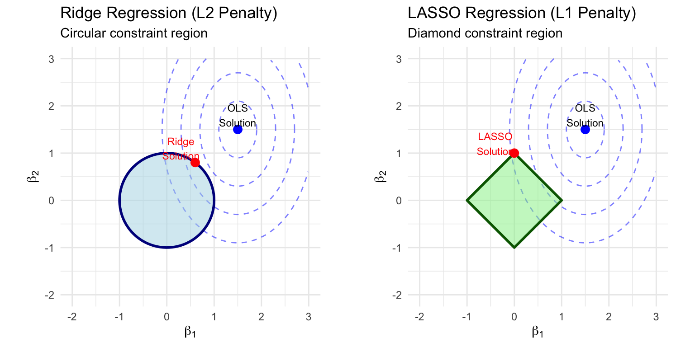
Penalized Regression in Healthcare Analytics
Ridge, LASSO, and Elastic Net for Healthcare Management
1 Introduction and Learning Objectives
1.1 The Challenge of Prediction in Healthcare
In healthcare management, making accurate predictions is crucial for organizational success and patient outcomes. Healthcare administrators and analysts routinely need to answer questions like:
How much will this patient cost our health system next year? Accurate cost predictions help with budgeting, premium setting, and identifying patients who might benefit from care management programs.
Which patients are at highest risk for hospital readmission? Hospitals face financial penalties for excessive readmissions, and more importantly, readmissions often indicate gaps in care quality.
How long will this patient stay in the hospital? Length of stay predictions help with bed management, staffing, and discharge planning.
Which patients should receive outreach from our care management team? With limited resources, healthcare organizations must prioritize interventions for patients most likely to benefit.
To answer these questions, we build predictive models using patient data. Traditional regression methods work well in many situations, but healthcare data presents unique challenges that require more sophisticated approaches.
1.2 Why Traditional Regression Falls Short
Consider a typical healthcare prediction problem: predicting annual healthcare costs. You might have access to:
- Demographics: age, sex, race, geographic location
- Socioeconomic factors: income, education, employment status
- Insurance information: plan type, coverage level
- Clinical data: diagnoses (potentially hundreds of ICD codes), procedures, lab results
- Medications: current prescriptions (potentially dozens of drug categories)
- Utilization history: prior ER visits, hospitalizations, physician visits
- Health behaviors: smoking status, BMI, exercise habits
Suddenly, you have dozens or even hundreds of potential predictor variables. Traditional ordinary least squares (OLS) regression struggles in this situation because:
- Too many variables can lead to overfitting - the model memorizes the training data rather than learning generalizable patterns
- Correlated variables create instability - when predictors are related to each other (like diabetes and obesity), coefficient estimates become unreliable
- We need to know which variables actually matter - for practical implementation, we can’t use all 200 variables
Penalized regression (also called regularized regression or shrinkage methods) solves these problems by adding a constraint that prevents the model from becoming too complex. This simple modification produces models that predict better on new data and identify the most important variables automatically.
1.3 Learning Objectives
By the end of this two-hour module, you will be able to:
Explain why penalized regression often outperforms ordinary least squares regression in healthcare prediction scenarios, particularly when dealing with many predictors or correlated variables
Distinguish between Ridge, LASSO, and Elastic Net regression based on their mathematical formulations, the types of penalties they apply, and their practical implications for model interpretation
Describe the bias-variance tradeoff and explain how the tuning parameter lambda controls the balance between model fit and model complexity
Implement penalized regression models in R using the
glmnetpackage, including data preparation, model fitting, cross-validation, and predictionSelect optimal tuning parameters using cross-validation and interpret the results to choose between lambda.min and lambda.1se
Apply these methods to realistic healthcare problems including cost prediction, readmission risk modeling, and resource utilization forecasting
Interpret model results appropriately, understanding both what the coefficients tell us and the limitations of predictive (vs. causal) modeling
2 PART 1: LECTURE - Conceptual Foundations
This section provides the theoretical foundation you need to understand penalized regression. We’ll start with a review of ordinary least squares regression, identify its limitations, and then see how adding a penalty term addresses these limitations. By the end of this section, you’ll understand the intuition behind Ridge, LASSO, and Elastic Net regression.
2.1 Review: Ordinary Least Squares (OLS) Regression
Before diving into penalized methods, let’s recall how standard linear regression works. This review will help us understand what we’re modifying and why.
2.1.1 The Basic Setup
In linear regression, we want to predict a continuous outcome variable \(Y\) (like healthcare costs) using a set of predictor variables \(X_1, X_2, \ldots, X_p\) (like age, diagnoses, prior utilization). We assume the relationship takes the form:
\[\hat{Y} = \beta_0 + \beta_1 X_1 + \beta_2 X_2 + \cdots + \beta_p X_p\]
Where:
- \(\hat{Y}\) is our predicted value
- \(\beta_0\) is the intercept (predicted value when all X’s are zero)
- \(\beta_1, \beta_2, \ldots, \beta_p\) are coefficients that tell us how much \(Y\) changes for a one-unit change in each predictor
2.1.2 How OLS Finds the Best Coefficients
OLS finds the coefficient values that minimize the Sum of Squared Errors (SSE) - the total squared difference between what we predicted and what actually happened:
\[\text{Minimize: } SSE = \sum_{i=1}^{n} (Y_i - \hat{Y}_i)^2\]
In words: we square the prediction errors (so positive and negative errors don’t cancel out), add them up across all observations, and find the coefficients that make this sum as small as possible.
This approach has served statisticians well for over 200 years. It has nice mathematical properties, produces unbiased estimates, and works excellently when:
- We have many more observations than predictors (\(n >> p\))
- Predictors are not highly correlated with each other
- Our primary goal is to understand relationships (statistical inference)
However, modern healthcare analytics often violates these conditions, leading to three major problems.
2.2 Three Problems with OLS in Healthcare Analytics
2.2.2 Problem 2: High-Dimensional Data - Too Many Predictors
What is the high-dimensional problem?
When the number of predictors (\(p\)) approaches or exceeds the number of observations (\(n\)), OLS breaks down mathematically and practically.
Why does this happen in healthcare?
Healthcare data often has many potential predictors:
- Diagnosis codes: The ICD-10 system has over 70,000 codes. Even grouping into categories might leave you with 200+ diagnosis variables.
- Medications: Patients might be on any of thousands of drugs, often grouped into 50-100 therapeutic categories.
- Procedures: CPT codes for procedures add another dimension.
- Lab values: Dozens of lab tests, each potentially predictive.
Meanwhile, your sample size might be limited:
- A single hospital might have only 500-1,000 patients with a specific condition
- Rare outcomes (like mortality) might have only 50-100 events
- New programs might have limited historical data
What goes wrong when p approaches n?
Mathematical failure: When \(p > n\), the OLS solution doesn’t exist - there are infinitely many sets of coefficients that perfectly fit the training data.
Severe overfitting: Even when \(p < n\) but close to it, OLS will fit the training data almost perfectly by exploiting noise. The model memorizes the training data rather than learning patterns.
Poor generalization: A model that overfits the training data will perform terribly on new patients. It has learned the quirks of your specific sample, not the underlying relationships.
Example:
You have 300 patients and 250 predictor variables. OLS will find coefficients that predict the training data almost perfectly - maybe an R² of 0.95. But when you apply this model to new patients, predictions are wildly inaccurate because the model captured noise, not signal.
2.2.3 Problem 3: Lack of Feature Selection - Which Variables Matter?
The interpretability challenge
Even when OLS produces reliable estimates, it keeps all variables in the model. Every predictor gets a coefficient, even if that coefficient is essentially zero.
Why is this a problem in healthcare?
Healthcare organizations need practical, implementable models:
- EHR integration: A risk score in the electronic health record should use a manageable number of variables, perhaps 10-20.
- Clinical workflow: Clinicians can’t consider 200 factors when making decisions.
- Communication: Explaining to patients why they’re “high risk” requires a simple model.
- Validation: Simpler models are easier to validate across different settings.
What we want:
Automatic identification of the most important predictors while setting others to zero. OLS doesn’t do this - it gives every variable a non-zero coefficient, even noise variables that happened to correlate with the outcome in your sample.
2.3 The Solution: Penalized Regression
2.3.1 The Key Insight
All three problems above stem from too much flexibility - OLS can set coefficients to any value to minimize training error. The solution is to constrain the coefficients, preventing them from becoming too large.
We do this by modifying the OLS objective function:
\[\text{Minimize: } SSE + \lambda \times \text{Penalty}\]
Where:
- SSE = Sum of Squared Errors (how well the model fits the training data)
- Penalty = A function of the coefficient sizes (how complex the model is)
- λ (lambda) = A tuning parameter that controls how much we penalize complexity
2.3.2 How the Penalty Helps
The penalty term creates a tradeoff:
- Making SSE smaller (better fit) requires larger coefficients
- Making the penalty smaller requires smaller coefficients
- The optimal solution balances fit and complexity
This has three beneficial effects:
- Shrinks coefficients toward zero: Reduces variance and prevents overfitting
- Stabilizes correlated predictors: Spreads effects across related variables
- Can eliminate variables entirely: Some penalty types set coefficients exactly to zero
2.3.3 The Role of Lambda (λ)
The tuning parameter λ controls how much we care about the penalty:
- λ = 0: No penalty, model equals OLS
- Small λ: Light penalty, close to OLS
- Large λ: Heavy penalty, coefficients shrunk toward zero
- λ → ∞: All coefficients forced to zero (except intercept)
We need to choose λ carefully - too small and we don’t solve our problems; too large and we throw away useful information. We’ll discuss how to select λ using cross-validation later.
2.4 The Bias-Variance Tradeoff
Before examining specific penalty types, we need to understand a fundamental concept in predictive modeling: the bias-variance tradeoff. This concept explains why adding a penalty (which seems to make the model worse) actually improves predictions.
2.4.1 Understanding Prediction Error
When we apply a model to new data, the prediction error comes from three sources:
\[\text{Total Error} = \text{Bias}^2 + \text{Variance} + \text{Irreducible Error}\]
Let’s understand each component:
Bias is systematic error - the model consistently misses in the same direction because it’s not flexible enough to capture the true pattern.
- Example: Predicting costs with only age. You’ll consistently underpredict for sick patients and overpredict for healthy patients because you’re missing important information.
Variance is random error - the model’s predictions change a lot depending on which specific patients were in the training data.
- Example: A very flexible model with many variables might predict that 65-year-old diabetic women cost $50,000 in one sample but $30,000 in another sample, just due to random variation in who happened to be in each sample.
Irreducible error is noise we can’t predict - true randomness in the outcome.
- Example: Even identical patients will have different costs due to accidents, random illness, individual choices, etc.
2.4.2 The Tradeoff
Here’s the key insight: we can’t minimize bias and variance simultaneously.
| Model Flexibility | Bias | Variance | When It Happens |
|---|---|---|---|
| Too simple | High | Low | Underfitting - missing patterns |
| Too complex | Low | High | Overfitting - fitting noise |
| Just right | Moderate | Moderate | Optimal prediction |
Why the tradeoff exists:
- A simple model (high bias) makes similar predictions regardless of the training sample (low variance) but misses complex patterns
- A complex model (low bias) captures patterns but also captures noise that differs between samples (high variance)
2.4.3 Penalized Regression and the Tradeoff
This is where penalized regression shines. By shrinking coefficients:
- We increase bias slightly (the model can’t fit the training data as perfectly)
- We decrease variance substantially (predictions are more stable)
- The net effect is lower total error on new data
Visual intuition:
Imagine fitting a line to points that form a slight curve with some noise:
- OLS: Fits a wiggly line that goes through every point (low bias, high variance)
- Penalized regression: Fits a smoother line that misses some points but captures the overall pattern (moderate bias, lower variance)
The smoother line will predict better on new points because it hasn’t memorized the noise.
2.4.4 Practical Implications for Healthcare
In healthcare prediction:
- We almost always have some irreducible error (healthcare is inherently uncertain)
- Datasets often have many correlated predictors (high variance risk)
- We typically care about predicting for new patients (need generalization)
This means penalized regression is almost always worth trying. Even if it doesn’t improve much over OLS, it rarely hurts and often helps substantially.
2.5 Ridge Regression: The L2 Penalty
Now let’s examine the first specific type of penalized regression: Ridge regression. This method addresses multicollinearity and overfitting by shrinking all coefficients toward zero.
2.5.1 Mathematical Formulation
Ridge regression adds a penalty based on the squared values of coefficients:
\[\text{Minimize: } \sum_{i=1}^{n} (Y_i - \hat{Y}_i)^2 + \lambda \sum_{j=1}^{p} \beta_j^2\]
The penalty term \(\sum_{j=1}^{p} \beta_j^2\) is called the L2 penalty or squared penalty because we’re summing squared coefficients.
What this formula says:
“Find the coefficients that make predictions accurate (small SSE) while also keeping coefficients small (small sum of squared betas). The parameter λ controls how much we care about keeping coefficients small.”
2.5.2 How Ridge Regression Works
The L2 penalty has several important properties:
1. Shrinks all coefficients toward zero
As λ increases, all coefficients get smaller. But they never reach exactly zero - they get closer and closer without arriving.
Why? The penalty is proportional to \(\beta^2\). When β is already small, making it smaller provides little benefit (small numbers squared are tiny). The model keeps a small non-zero value rather than eliminating the variable entirely.
2. Shrinks larger coefficients more
If coefficient A is twice as large as coefficient B, A contributes four times as much to the penalty (because of squaring). This means Ridge regression shrinks large coefficients more aggressively.
3. Handles correlated predictors gracefully
Remember our multicollinearity example with chronic conditions and medications? Ridge regression would:
- Shrink both coefficients
- Spread the predictive effect between them
- Avoid giving one a large coefficient and the other a counterintuitive sign
2.5.3 Visual Understanding: The Constraint Region
One of the best ways to understand Ridge regression is geometrically. Imagine we have just two predictors, so we’re looking for β₁ and β₂.
Understanding the figure:
Blue dashed ellipses: Contour lines of SSE. The center is where SSE is minimized (the OLS solution). Moving away from the center increases SSE.
Blue shaded region: The constraint region - all combinations of β₁ and β₂ that satisfy the penalty constraint. For Ridge, this is a circle because we’re constraining \(\beta_1^2 + \beta_2^2 \leq c\) (equation of a circle).
The solution: We want to be as close to the OLS center as possible (small SSE) while staying within the constraint region (small penalty). The Ridge solution is where the smallest ellipse touches the circle.
Key insight: Because the constraint region is a circle, the solution rarely lands exactly on an axis. This means Ridge keeps all variables with non-zero coefficients.
2.5.4 Advantages of Ridge Regression
1. Excellent for multicollinearity
Ridge regression handles correlated predictors gracefully by distributing effects among them. Instead of giving one variable a huge coefficient and another a counterintuitive coefficient, Ridge shrinks both toward a sensible middle ground.
2. Always produces a solution
Unlike OLS, Ridge regression works even when you have more predictors than observations (p > n). The penalty term ensures a unique, stable solution.
3. Reduces variance substantially
By shrinking coefficients, Ridge regression produces predictions that are much more stable across different samples. This is particularly valuable when sample sizes are limited.
4. Works well when all predictors are relevant
If you believe most of your predictors have at least some predictive value, Ridge keeps them all while preventing any single variable from dominating.
2.5.5 Disadvantages of Ridge Regression
1. No feature selection
Ridge regression keeps all variables in the model with non-zero coefficients. If you have 200 predictors, your Ridge model has 200 predictors. This makes interpretation difficult and implementation impractical.
2. Less interpretable
When you have many small coefficients, it’s hard to tell which variables really matter. The model works as a “black box” for prediction but doesn’t clearly identify key drivers.
3. Includes noise variables
Variables that are pure noise will get small but non-zero coefficients. In very high-dimensional settings, the cumulative effect of many noise variables can hurt predictions.
2.5.6 When to Use Ridge Regression
Ridge regression is best when:
- You have correlated predictors that you want to keep together
- You believe most predictors have some value
- Interpretation is less important than prediction
- You have moderate dimensionality (tens of predictors, not hundreds)
2.6 LASSO Regression: The L1 Penalty
LASSO (Least Absolute Shrinkage and Selection Operator) is the other major penalized regression method. Its key advantage over Ridge is automatic feature selection - LASSO can eliminate variables entirely by setting their coefficients exactly to zero.
2.6.1 Mathematical Formulation
LASSO adds a penalty based on the absolute values of coefficients:
\[\text{Minimize: } \sum_{i=1}^{n} (Y_i - \hat{Y}_i)^2 + \lambda \sum_{j=1}^{p} |\beta_j|\]
The penalty term \(\sum_{j=1}^{p} |\beta_j|\) is called the L1 penalty or absolute value penalty.
The critical difference from Ridge: Using absolute values instead of squared values changes the geometry in a way that allows coefficients to become exactly zero.
2.6.2 How LASSO Achieves Feature Selection
This is the key insight that makes LASSO special. Let’s understand why the L1 penalty produces zeros while the L2 penalty doesn’t.
The derivative argument:
Think about how the penalty changes as we shrink a coefficient toward zero:
L2 penalty (Ridge): The penalty is \(\lambda \beta^2\). The derivative (how fast the penalty changes) is \(2\lambda\beta\). As β gets smaller, the penalty savings from further shrinkage get smaller too. It’s not worth pushing all the way to zero.
L1 penalty (LASSO): The penalty is \(\lambda |\beta|\). The derivative is \(\lambda\) (constant). The penalty savings from shrinkage are the same whether β is large or small. If a variable isn’t contributing enough to reduce SSE, it gets pushed all the way to zero.
The geometric argument:
Look back at our figure. The LASSO constraint region is a diamond with corners on the axes. Because SSE contours are elliptical, they’re likely to first touch the diamond at a corner - where one or both coefficients are exactly zero.
The Ridge constraint region is smooth (a circle), so the contour touches at a point where both coefficients are typically non-zero.
2.6.3 The Sparsity Property
When we say LASSO produces sparse models, we mean most coefficients are zero. Only a subset of variables are selected.
Why is sparsity valuable in healthcare?
Interpretability: A model with 15 predictors is easier to understand and explain than one with 150.
Implementation: Fewer variables means less data to collect, fewer EHR fields to query, faster computation.
Generalization: Simpler models often generalize better because they’re less likely to have captured noise.
Communication: You can tell a clinician “these 10 factors drive readmission risk” rather than presenting 100 coefficients.
2.6.4 Advantages of LASSO Regression
1. Automatic feature selection
LASSO identifies the most important predictors and eliminates the rest. This is invaluable when you have many potential predictors and need to find the signal.
2. Produces interpretable models
With fewer non-zero coefficients, you can understand what drives predictions. “Costs are driven by age, prior hospitalization, diabetes, and heart disease” is actionable.
3. Works in high dimensions
LASSO can handle p > n by selecting at most n variables. This makes it useful for healthcare applications with many diagnostic codes or lab values.
4. Prevents overfitting
By eliminating noise variables, LASSO avoids fitting to spurious patterns that don’t generalize.
2.6.5 Disadvantages of LASSO Regression
1. Arbitrary selection among correlated predictors
This is LASSO’s main weakness. When two variables are highly correlated, LASSO tends to pick one and eliminate the other - but the choice is essentially arbitrary.
Example: If “number of chronic conditions” and “Charlson comorbidity index” are correlated at r = 0.9, LASSO might keep conditions and drop Charlson in one sample, but do the opposite in another sample. This makes interpretation risky.
2. May sacrifice prediction accuracy
Because LASSO can completely eliminate variables, it sometimes throws away useful information. Ridge regression, by keeping everything, often achieves slightly lower prediction error.
3. Selects at most n variables
In very high-dimensional settings (p >> n), LASSO can select at most n variables. This might miss important predictors.
2.6.6 When to Use LASSO Regression
LASSO is best when:
- You want to identify the most important predictors
- Interpretability and simplicity are important
- You have many potential predictors and need feature selection
- Predictors are not highly correlated (or you’re comfortable with arbitrary selection)
2.7 Elastic Net: Combining Ridge and LASSO
Elastic Net combines the strengths of both Ridge and LASSO by using both penalties together. It’s often the best choice in practice because it handles correlated variables better than LASSO while still performing feature selection.
2.7.1 Mathematical Formulation
Elastic Net minimizes:
\[\text{Minimize: } \sum_{i=1}^{n} (Y_i - \hat{Y}_i)^2 + \lambda \left[ \alpha \sum_{j=1}^{p} |\beta_j| + (1-\alpha) \sum_{j=1}^{p} \beta_j^2 \right]\]
Where:
- α (alpha) controls the mix of L1 and L2 penalties
- α = 1: Pure LASSO
- α = 0: Pure Ridge
- 0 < α < 1: Elastic Net blend
2.7.3 Tuning Elastic Net
Elastic Net requires tuning two parameters:
- λ (lambda): How much total penalty to apply
- α (alpha): The mix between L1 and L2
Typically, we:
- Create a grid of α values (e.g., 0, 0.1, 0.2, …, 1.0)
- For each α, use cross-validation to find the optimal λ
- Compare performance across α values
- Select the (α, λ) combination with best cross-validated performance
2.7.4 Advantages of Elastic Net
1. Best of both worlds
- Performs feature selection (from LASSO)
- Handles correlated predictors (from Ridge)
- Groups related variables together
2. More stable than LASSO
When predictors are correlated, Elastic Net produces more stable selections across different samples.
3. Works when p >> n
Can select more than n variables (unlike LASSO) when α < 1.
4. Flexible
You can tune α to your specific situation - more L1 for aggressive selection, more L2 for stability.
2.7.5 Disadvantages of Elastic Net
1. Additional tuning
Two parameters to tune means more computation and decisions.
2. Still assumes linearity
Like all regression methods, assumes linear (or linearizable) relationships.
3. May not be necessary
If your predictors aren’t correlated, LASSO alone works fine. If you don’t need feature selection, Ridge alone works fine.
2.7.6 When to Use Elastic Net
Elastic Net is often the default choice because it works well in most situations:
- Correlated predictors with need for feature selection
- Uncertainty about which method to use
- High-dimensional data where grouping is important
- When you want stability in selected features
2.8 Comparing the Three Methods
Let’s summarize the key differences to help you choose the right method for your healthcare analytics problem.
2.8.1 Side-by-Side Comparison
| Criterion | Ridge | LASSO | Elastic Net |
|---|---|---|---|
| Penalty | L2 (squared) | L1 (absolute) | Both L1 and L2 |
| Feature selection | No - keeps all variables | Yes - zeros out variables | Yes - zeros out variables |
| Correlated predictors | Excellent - shrinks together | Poor - arbitrary selection | Good - groups together |
| Works when p > n | Yes | Yes (selects ≤ n) | Yes (can select > n) |
| Number of tuning parameters | 1 (λ) | 1 (λ) | 2 (λ and α) |
| Interpretability | Low (many variables) | High (sparse model) | Moderate |
| Best for | Correlated predictors, all relevant | Feature selection, uncorrelated | General use, correlated with selection |
2.8.2 Decision Framework
Use this flowchart to choose a method:
Is feature selection important?
│
├── NO: Use Ridge
│
└── YES: Are predictors highly correlated?
│
├── NO: Use LASSO
│
└── YES: Use Elastic Net2.8.3 Healthcare-Specific Guidance
For cost prediction models:
Often many variables are predictive and correlated (comorbidities, utilization). Consider Elastic Net for stability with feature selection, or Ridge if you don’t need to identify specific drivers.
For readmission risk scores:
Typically want an interpretable model with clear risk factors. LASSO or Elastic Net to identify top predictors. Use lambda.1se for a sparser model.
For EHR-integrated alerts:
Need simple, fast models. LASSO with aggressive selection (lambda.1se) to minimize variables.
For research/understanding:
Be cautious about over-interpreting selected variables. Consider running multiple methods and looking for consistent selections.
2.9 Selecting the Tuning Parameter: Cross-Validation
We’ve established that λ controls the bias-variance tradeoff, but how do we actually choose its value? The answer is cross-validation - a technique that estimates how well our model will perform on new data.
2.9.1 Why Not Use Training Error?
You might think: “Just try different λ values and pick the one with lowest error.”
The problem: we need to evaluate error on new data, not the training data. A model that perfectly fits the training data (λ = 0, no penalty) will often perform terribly on new data.
We could split our data into training and test sets, but this:
- Wastes data (test set can’t be used for training)
- Gives high-variance estimate (depends on random split)
Cross-validation solves both problems.
2.9.2 K-Fold Cross-Validation
Here’s how K-fold cross-validation works:
Step 1: Randomly divide the training data into K equally-sized “folds” (typically K = 10)
Step 2: For each candidate λ value:
- Hold out fold 1 as validation set, train on folds 2-K
- Calculate prediction error on fold 1
- Repeat with fold 2 as validation set, train on folds 1, 3-K
- Continue until each fold has served as validation
- Average the K error estimates
Step 3: Select λ with lowest average error
Step 4: Refit model using selected λ on all training data
2.9.3 Visual Understanding
Imagine 10-fold CV with 1,000 patients:
Fold: [ 1 ][ 2 ][ 3 ][ 4 ][ 5 ][ 6 ][ 7 ][ 8 ][ 9 ][10]
Round 1: Test Train Train Train Train Train Train Train Train Train
Round 2: Train Test Train Train Train Train Train Train Train Train
...
Round 10: Train Train Train Train Train Train Train Train Train TestEach patient is in the test set exactly once. We get an error estimate that uses all data efficiently.
2.9.4 Two Common λ Choices
After cross-validation, we have error estimates for each λ. We typically consider two values:
lambda.min: The λ with the absolute lowest cross-validated error
- Best predictive accuracy
- May include more variables
lambda.1se: The largest λ within one standard error of the minimum
- Simpler model (fewer variables, more shrinkage)
- Often preferred for stability and interpretability
- “1se rule” - since CV error is estimated with uncertainty, we prefer simplicity when performance is similar
2.9.5 Healthcare Recommendation
For most healthcare applications, lambda.1se is preferred because:
- Models need to be interpretable for clinicians
- Simpler models are easier to implement in EHRs
- Simpler models generalize better to different patient populations
- The small accuracy sacrifice is usually worth the interpretability gain
Use lambda.min when:
- Predictive accuracy is paramount
- You have a large sample and many truly predictive variables
- The model won’t be interpreted (pure prediction)
3 PART 2: TUTORIAL - Hands-On Implementation
Now that you understand the concepts behind penalized regression, let’s see how to implement these methods in R. We’ll use the glmnet package, which is the standard tool for penalized regression and provides efficient algorithms for Ridge, LASSO, and Elastic Net.
In this tutorial, we’ll:
- Create a realistic healthcare dataset for predicting patient costs
- Prepare the data for glmnet (which has specific requirements)
- Fit OLS as a baseline for comparison
- Fit Ridge, LASSO, and Elastic Net models
- Use cross-validation to select optimal tuning parameters
- Compare model performance and interpret results
- Make predictions on new patients
3.1 Setup and Packages
First, we need to install and load the required packages. The glmnet package provides the main penalized regression functions, and we’ll use dplyr and ggplot2 for data manipulation and visualization.
Show code
# Install packages if needed (uncomment to run first time)
# install.packages(c("glmnet", "dplyr", "ggplot2", "tidyr", "caret"))
# Load required packages
library(glmnet) # Penalized regression - main package for this tutorial
library(dplyr) # Data manipulation - makes data wrangling easier
library(ggplot2) # Visualization - creates professional plots
library(tidyr) # Data reshaping - helps reorganize data for plotting
library(caret) # Model training utilities - additional ML tools
library(pROC) # ROC curves and AUC calculations
# Set seed for reproducibility
# This ensures everyone gets the same results when running the code
set.seed(2024)3.2 Creating a Healthcare Cost Prediction Dataset
For this tutorial, we’ll create a realistic simulated dataset representing patients in a healthcare system. Our goal is to predict annual healthcare costs based on patient characteristics, health conditions, and prior healthcare utilization.
This type of model is used by health insurance companies for risk adjustment, by hospitals for budgeting, and by care management programs to identify high-cost patients who might benefit from interventions.
Show code
# Number of patients in our dataset
n <- 500
# Generate patient characteristics
# We're creating a dataframe with various predictors that might influence costs
healthcare_data <- data.frame(
patient_id = 1:n,
# Demographics
# Age: centered around 55 with standard deviation of 15
age = round(rnorm(n, mean = 55, sd = 15)),
# Female: 52% of patients are female (binary variable)
female = rbinom(n, 1, 0.52),
# Socioeconomic factors
# Income level on 1-5 scale (1=lowest, 5=highest)
income_level = sample(1:5, n, replace = TRUE,
prob = c(0.15, 0.20, 0.30, 0.20, 0.15)),
# Insurance status: 88% have insurance
has_insurance = rbinom(n, 1, 0.88),
# Health behaviors
# Smoker: 18% smoking rate
smoker = rbinom(n, 1, 0.18),
# BMI: average of 28 (slightly overweight) with SD of 6
bmi = round(rnorm(n, mean = 28, sd = 6), 1),
# Exercise days per week: Poisson distributed with mean of 2
exercise_days = rpois(n, lambda = 2),
# Chronic conditions - these will be major cost drivers
diabetes = rbinom(n, 1, 0.12), # 12% prevalence
hypertension = rbinom(n, 1, 0.30), # 30% prevalence
heart_disease = rbinom(n, 1, 0.08), # 8% prevalence
copd = rbinom(n, 1, 0.06), # 6% prevalence
depression = rbinom(n, 1, 0.15), # 15% prevalence
arthritis = rbinom(n, 1, 0.22), # 22% prevalence
# Healthcare utilization from prior year
ed_visits = rpois(n, lambda = 0.5), # ED visits (mean 0.5/year)
hospitalizations = rpois(n, lambda = 0.15), # Hospital stays (mean 0.15/year)
physician_visits = rpois(n, lambda = 4), # Office visits (mean 4/year)
num_medications = rpois(n, lambda = 3) # Number of medications (mean 3)
)
# Make chronic conditions more realistic by adding correlations
# In real data, conditions cluster together - people with diabetes often have
# hypertension and heart disease. Let's create these associations.
healthcare_data <- healthcare_data %>%
mutate(
# Diabetes is more common in older patients with high BMI
diabetes = ifelse(bmi > 30 & age > 50,
rbinom(n(), 1, 0.25), diabetes),
# Hypertension is more common in diabetics
hypertension = ifelse(diabetes == 1,
rbinom(n(), 1, 0.65), hypertension),
# Heart disease is more common with multiple risk factors
heart_disease = ifelse(diabetes == 1 & hypertension == 1 & age > 60,
rbinom(n(), 1, 0.30), heart_disease)
)
# Generate the outcome variable: Annual healthcare costs
# Costs are driven by conditions, utilization, and demographics
# This represents our "true" data generating process
healthcare_data <- healthcare_data %>%
mutate(
annual_cost =
# Base cost for everyone
2000 +
# Demographics - older patients and uninsured cost more
age * 50 +
(1 - has_insurance) * 1500 +
# Health behaviors - smoking and obesity increase costs
smoker * 2000 +
pmax(bmi - 25, 0) * 100 + # Extra cost for each BMI point above 25
# Chronic conditions - these are the major cost drivers
diabetes * 5000 +
hypertension * 2000 +
heart_disease * 8000 +
copd * 6000 +
depression * 1500 +
arthritis * 1000 +
# Prior utilization strongly predicts future costs
ed_visits * 1500 +
hospitalizations * 15000 +
physician_visits * 200 +
num_medications * 500 +
# Random noise - healthcare has inherent unpredictability
rnorm(n(), 0, 3000)
) %>%
# Ensure costs are positive (can't have negative costs)
mutate(annual_cost = pmax(annual_cost, 500))
# Let's look at the first few rows of our dataset
head(healthcare_data) patient_id age female income_level has_insurance smoker bmi exercise_days
1 1 70 0 2 1 0 43.2 3
2 2 62 1 3 1 0 26.9 0
3 3 53 1 5 1 1 32.3 0
4 4 52 0 2 1 0 21.7 0
5 5 72 0 1 1 0 26.2 1
6 6 74 1 1 1 1 28.2 1
diabetes hypertension heart_disease copd depression arthritis ed_visits
1 0 0 0 0 1 0 1
2 0 0 0 0 0 0 0
3 0 1 0 0 0 0 0
4 0 0 0 0 0 0 0
5 0 1 0 0 0 0 0
6 0 0 0 0 0 1 3
hospitalizations physician_visits num_medications annual_cost
1 0 3 3 12019.243
2 1 2 4 20266.688
3 0 3 4 6653.546
4 0 2 2 5186.669
5 0 2 1 11569.070
6 1 4 2 30574.714Let’s examine the distribution of our outcome variable and get summary statistics:
Show code
# Summary statistics for the cost variable
cat("Summary of Annual Healthcare Costs:\n")Summary of Annual Healthcare Costs:Show code
summary(healthcare_data$annual_cost) Min. 1st Qu. Median Mean 3rd Qu. Max.
500 8682 11973 13485 16407 37975 Show code
# Additional statistics
cat("\nStandard Deviation: $", round(sd(healthcare_data$annual_cost), 2), "\n")
Standard Deviation: $ 7080.75 Show code
cat("Number of patients: ", nrow(healthcare_data), "\n")Number of patients: 500 Show code
# Visualize the cost distribution
ggplot(healthcare_data, aes(x = annual_cost)) +
geom_histogram(bins = 30, fill = "steelblue", color = "white", alpha = 0.8) +
scale_x_continuous(labels = scales::dollar_format()) +
labs(
title = "Distribution of Annual Healthcare Costs",
subtitle = paste0("n = ", n, " patients | Mean = $",
format(round(mean(healthcare_data$annual_cost)), big.mark = ",")),
x = "Annual Cost ($)",
y = "Number of Patients"
) +
theme_minimal() +
theme(plot.title = element_text(face = "bold"))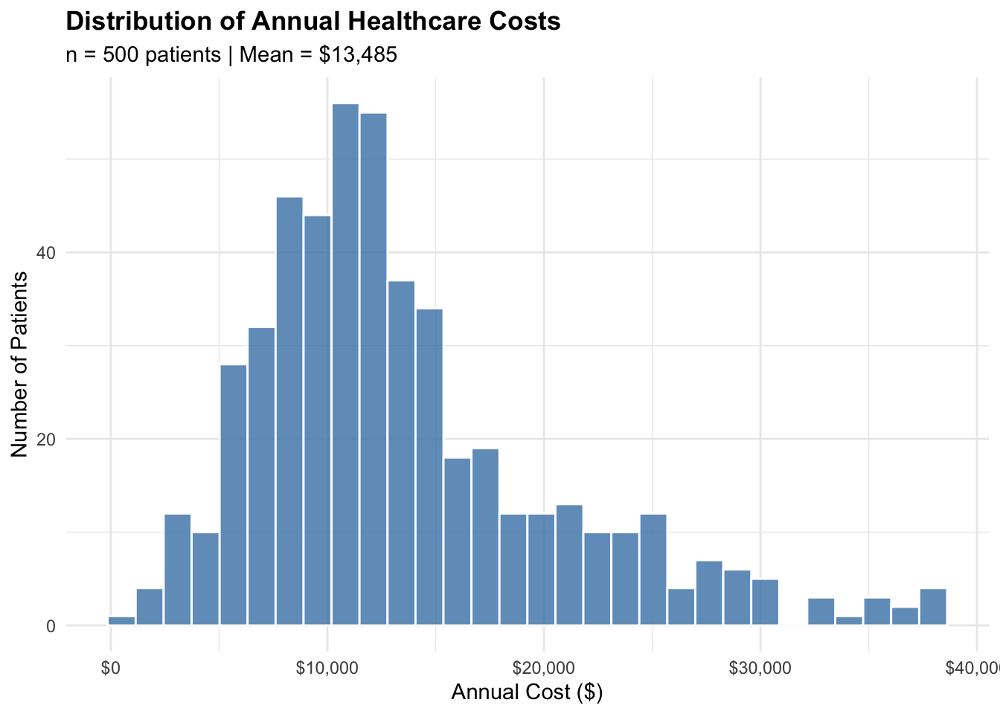
Notice that the cost distribution is right-skewed - most patients have moderate costs, but some have very high costs. This is typical of healthcare cost data. For simplicity, we’ll model costs directly, but in practice you might consider log-transforming the outcome.
3.3 Data Preparation for glmnet
The glmnet package has specific data format requirements that differ from regular R regression functions like lm(). Understanding these requirements is important for successful implementation.
glmnet requires:
- x: A matrix of predictors (not a data frame)
- y: A vector of outcomes
This is different from the formula interface (y ~ x1 + x2) used by lm(). The reason is computational efficiency - matrix operations are faster.
Show code
# First, let's split our data into training and test sets
# We'll use 70% for training and 30% for testing
# This allows us to evaluate model performance on data not used for fitting
train_index <- sample(1:n, size = 0.7 * n) # Randomly select 70% of indices
train_data <- healthcare_data[train_index, ]
test_data <- healthcare_data[-train_index, ]
# Define which variables are predictors
# We exclude patient_id (just an identifier) and annual_cost (our outcome)
predictor_vars <- setdiff(names(healthcare_data), c("patient_id", "annual_cost"))
# Create the matrix format required by glmnet
# Training set
x_train <- as.matrix(train_data[, predictor_vars])
y_train <- train_data$annual_cost
# Test set
x_test <- as.matrix(test_data[, predictor_vars])
y_test <- test_data$annual_cost
# Let's verify our data dimensions
cat("Training set dimensions:\n")Training set dimensions:Show code
cat(" - Number of patients:", nrow(x_train), "\n") - Number of patients: 350 Show code
cat(" - Number of predictors:", ncol(x_train), "\n") - Number of predictors: 17 Show code
cat("\nTest set dimensions:\n")
Test set dimensions:Show code
cat(" - Number of patients:", nrow(x_test), "\n") - Number of patients: 150 Show code
cat(" - Number of predictors:", ncol(x_test), "\n") - Number of predictors: 17 Show code
cat("\nPredictor variables:\n")
Predictor variables:Show code
cat(paste(predictor_vars, collapse = ", "))age, female, income_level, has_insurance, smoker, bmi, exercise_days, diabetes, hypertension, heart_disease, copd, depression, arthritis, ed_visits, hospitalizations, physician_visits, num_medicationsImportant note about standardization:
glmnet automatically standardizes (centers and scales) predictor variables before fitting the model. This is important because the penalty treats all coefficients equally - without standardization, variables measured in different units would be penalized differently. The coefficients are then returned on the original scale, so you can interpret them normally.
3.4 Baseline: Ordinary Least Squares (OLS) Regression
Before fitting penalized models, let’s establish a baseline using ordinary least squares regression. This gives us a reference point for comparison - we want to see if penalized methods improve upon OLS.
Show code
# Fit OLS model using the standard lm() function
# We use all predictor variables to predict annual_cost
ols_model <- lm(annual_cost ~ ., data = train_data[, c(predictor_vars, "annual_cost")])
# View the model summary
summary(ols_model)
Call:
lm(formula = annual_cost ~ ., data = train_data[, c(predictor_vars,
"annual_cost")])
Residuals:
Min 1Q Median 3Q Max
-8458.9 -1943.6 -25.6 1760.8 7240.8
Coefficients:
Estimate Std. Error t value Pr(>|t|)
(Intercept) 3163.87 1390.54 2.275 0.023526 *
age 47.59 11.02 4.317 2.09e-05 ***
female 151.13 331.31 0.456 0.648572
income_level -230.38 135.02 -1.706 0.088907 .
has_insurance -2053.80 532.77 -3.855 0.000139 ***
smoker 2023.63 407.85 4.962 1.12e-06 ***
bmi 74.05 29.82 2.483 0.013507 *
exercise_days 42.64 120.16 0.355 0.722921
diabetes 4254.67 549.92 7.737 1.23e-13 ***
hypertension 2571.86 362.23 7.100 7.61e-12 ***
heart_disease 7286.28 619.10 11.769 < 2e-16 ***
copd 5328.09 751.62 7.089 8.17e-12 ***
depression 2252.49 470.63 4.786 2.56e-06 ***
arthritis 512.23 394.96 1.297 0.195559
ed_visits 1290.00 256.67 5.026 8.21e-07 ***
hospitalizations 14519.18 482.74 30.076 < 2e-16 ***
physician_visits 302.05 87.67 3.445 0.000644 ***
num_medications 338.35 94.52 3.580 0.000395 ***
---
Signif. codes: 0 '***' 0.001 '**' 0.01 '*' 0.05 '.' 0.1 ' ' 1
Residual standard error: 3026 on 332 degrees of freedom
Multiple R-squared: 0.8249, Adjusted R-squared: 0.8159
F-statistic: 92 on 17 and 332 DF, p-value: < 2.2e-16Now let’s evaluate the OLS model on our test set:
Show code
# Make predictions on the test set
ols_pred <- predict(ols_model, newdata = test_data)
# Calculate performance metrics
# MSE = Mean Squared Error (average of squared prediction errors)
# RMSE = Root Mean Squared Error (square root of MSE, in original units)
ols_mse <- mean((y_test - ols_pred)^2)
ols_rmse <- sqrt(ols_mse)
# Display results
cat("OLS Regression - Test Set Performance\n")OLS Regression - Test Set PerformanceShow code
cat("=====================================\n")=====================================Show code
cat("Mean Squared Error (MSE):", format(round(ols_mse), big.mark = ","), "\n")Mean Squared Error (MSE): 9,188,074 Show code
cat("Root Mean Squared Error (RMSE): $", format(round(ols_rmse, 2), big.mark = ","), "\n")Root Mean Squared Error (RMSE): $ 3,031.18 Show code
cat("\nInterpretation: On average, our OLS predictions are off by about $",
round(ols_rmse, 0), "\n")
Interpretation: On average, our OLS predictions are off by about $ 3031 3.5 Ridge Regression
Now let’s fit a Ridge regression model and see if it improves upon OLS. Remember, Ridge uses the L2 penalty (squared coefficients) and keeps all variables but shrinks their coefficients.
3.5.1 Fitting the Ridge Model
Show code
# Fit Ridge regression using glmnet
# alpha = 0 specifies Ridge (alpha = 1 would be LASSO)
ridge_model <- glmnet(
x = x_train,
y = y_train,
alpha = 0 # This makes it Ridge regression
)
# glmnet automatically fits models for many lambda values
# Let's see how many
cat("Number of lambda values tested:", length(ridge_model$lambda), "\n")Number of lambda values tested: 100 Show code
cat("Range of lambda values:", round(min(ridge_model$lambda), 2), "to",
round(max(ridge_model$lambda), 2), "\n")Range of lambda values: 499.09 to 4990893 3.5.2 Visualizing the Coefficient Paths
One of the most informative plots for penalized regression shows how coefficients change as lambda changes. This is called a “coefficient path” or “regularization path” plot.
Show code
# Plot coefficient paths
plot(ridge_model, xvar = "lambda", label = TRUE)
title("Ridge Regression: Coefficient Paths", line = 3)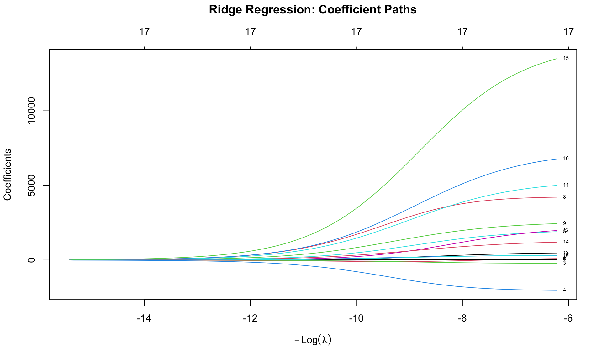
How to read this plot:
- X-axis: Log of lambda (penalty strength). Left = small penalty (close to OLS), Right = large penalty (heavy shrinkage)
- Y-axis: Coefficient values
- Each line: One predictor variable
- Key observation: As lambda increases (moving right), all coefficients shrink toward zero, but none reach exactly zero. This is the defining characteristic of Ridge regression.
3.5.3 Cross-Validation to Find Optimal Lambda
Now we need to determine the optimal value of lambda. We’ll use 10-fold cross-validation with the cv.glmnet() function, which automates this process.
Show code
# Perform 10-fold cross-validation to find optimal lambda
ridge_cv <- cv.glmnet(
x = x_train,
y = y_train,
alpha = 0, # Ridge
nfolds = 10 # 10-fold cross-validation
)
# Plot the cross-validation results
plot(ridge_cv)
title("Ridge Regression: Cross-Validation Results", line = 3)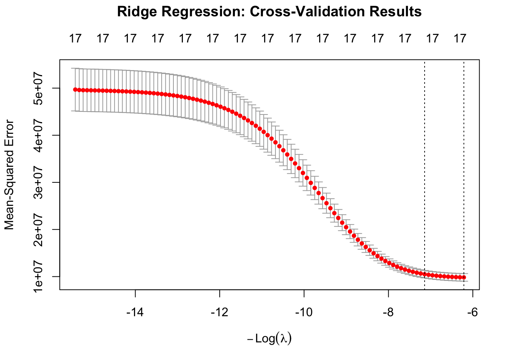
Show code
# Display the optimal lambda values
cat("Cross-Validation Results for Ridge Regression\n")Cross-Validation Results for Ridge RegressionShow code
cat("=============================================\n")=============================================Show code
cat("Lambda.min (lowest CV error):", round(ridge_cv$lambda.min, 2), "\n")Lambda.min (lowest CV error): 499.09 Show code
cat("Lambda.1se (within 1 SE of min):", round(ridge_cv$lambda.1se, 2), "\n")Lambda.1se (within 1 SE of min): 1265.37 How to read this plot:
- X-axis: Log of lambda
- Y-axis: Cross-validated Mean Squared Error
- Points: Average MSE across 10 folds
- Error bars: ±1 standard error
- Left dashed line: lambda.min (minimum MSE)
- Right dashed line: lambda.1se (largest lambda within 1 SE of minimum)
3.5.4 Examining Ridge Coefficients
Let’s look at the coefficients from our Ridge model at the optimal lambda:
Show code
# Extract coefficients at lambda.min
ridge_coef <- coef(ridge_cv, s = "lambda.min")
# Display coefficients
cat("Ridge Regression Coefficients (at lambda.min)\n")Ridge Regression Coefficients (at lambda.min)Show code
cat("=============================================\n")=============================================Show code
print(ridge_coef)18 x 1 sparse Matrix of class "dgCMatrix"
lambda.min
(Intercept) 4110.31216
age 44.75002
female 98.52697
income_level -220.81076
has_insurance -2029.22923
smoker 1900.75260
bmi 60.65284
exercise_days 37.94048
diabetes 4214.04633
hypertension 2444.69276
heart_disease 6780.22575
copd 5007.56603
depression 1982.76846
arthritis 472.44061
ed_visits 1198.99887
hospitalizations 13497.84513
physician_visits 296.53844
num_medications 320.98725Show code
# Note: All coefficients are non-zero - Ridge keeps all variables
n_nonzero_ridge <- sum(ridge_coef[-1] != 0) # Exclude intercept
cat("\nNumber of non-zero coefficients:", n_nonzero_ridge, "out of", length(predictor_vars), "\n")
Number of non-zero coefficients: 17 out of 17 As expected with Ridge regression, all coefficients are non-zero. The coefficients are shrunk compared to OLS but none are eliminated.
3.5.5 Ridge Test Set Performance
Let’s evaluate our Ridge model on the test set:
Show code
# Make predictions on the test set using lambda.min
ridge_pred <- predict(ridge_cv, s = "lambda.min", newx = x_test)
# Calculate performance metrics
ridge_mse <- mean((y_test - ridge_pred)^2)
ridge_rmse <- sqrt(ridge_mse)
# Display results
cat("Ridge Regression - Test Set Performance\n")Ridge Regression - Test Set PerformanceShow code
cat("======================================\n")======================================Show code
cat("Mean Squared Error (MSE):", format(round(ridge_mse), big.mark = ","), "\n")Mean Squared Error (MSE): 9,622,606 Show code
cat("Root Mean Squared Error (RMSE): $", format(round(ridge_rmse, 2), big.mark = ","), "\n")Root Mean Squared Error (RMSE): $ 3,102.03 Show code
# Compare to OLS
improvement <- (ols_rmse - ridge_rmse) / ols_rmse * 100
cat("\nImprovement over OLS:", round(improvement, 1), "%\n")
Improvement over OLS: -2.3 %3.6 LASSO Regression
Now let’s fit a LASSO model. Remember, LASSO uses the L1 penalty (absolute values) and can set coefficients exactly to zero, performing automatic feature selection.
3.6.1 Fitting the LASSO Model
Show code
# Fit LASSO regression using glmnet
# alpha = 1 specifies LASSO
lasso_model <- glmnet(
x = x_train,
y = y_train,
alpha = 1 # This makes it LASSO regression
)3.6.2 Visualizing LASSO Coefficient Paths
Show code
# Plot coefficient paths
plot(lasso_model, xvar = "lambda", label = TRUE)
title("LASSO Regression: Coefficient Paths", line = 3)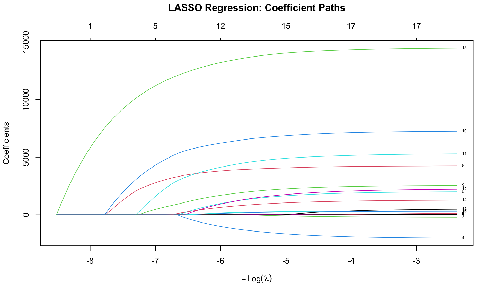
Key observation: Unlike Ridge, the LASSO paths hit zero! As lambda increases, variables are progressively eliminated from the model. This is the feature selection property of LASSO.
3.6.3 Cross-Validation for LASSO
Show code
# Perform 10-fold cross-validation
lasso_cv <- cv.glmnet(
x = x_train,
y = y_train,
alpha = 1, # LASSO
nfolds = 10
)
# Plot the cross-validation results
plot(lasso_cv)
title("LASSO Regression: Cross-Validation Results", line = 3)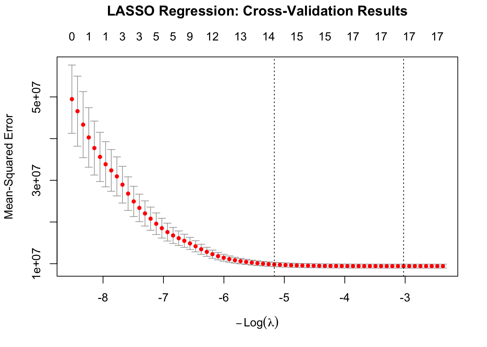
Show code
# Display the optimal lambda values
cat("Cross-Validation Results for LASSO Regression\n")Cross-Validation Results for LASSO RegressionShow code
cat("=============================================\n")=============================================Show code
cat("Lambda.min (lowest CV error):", round(lasso_cv$lambda.min, 4), "\n")Lambda.min (lowest CV error): 20.6224 Show code
cat("Lambda.1se (within 1 SE of min):", round(lasso_cv$lambda.1se, 4), "\n")Lambda.1se (within 1 SE of min): 175.2398 Notice that the numbers at the top of the plot show how many variables are in the model at each lambda value. As lambda increases (moving right), fewer variables remain.
3.6.4 LASSO Feature Selection
Now let’s examine which variables LASSO selected. This is one of the main advantages of LASSO - we get an automatically reduced set of important predictors.
Show code
# Coefficients at lambda.min (most accurate)
lasso_coef_min <- coef(lasso_cv, s = "lambda.min")
cat("LASSO Coefficients at lambda.min\n")LASSO Coefficients at lambda.minShow code
cat("================================\n")================================Show code
print(lasso_coef_min)18 x 1 sparse Matrix of class "dgCMatrix"
lambda.min
(Intercept) 3501.25444
age 45.89033
female 100.82260
income_level -209.50395
has_insurance -2001.64448
smoker 1973.20627
bmi 69.19518
exercise_days 26.31159
diabetes 4231.60160
hypertension 2527.86984
heart_disease 7230.65747
copd 5264.68318
depression 2182.94167
arthritis 445.65314
ed_visits 1252.75796
hospitalizations 14450.77281
physician_visits 291.77806
num_medications 329.66219Show code
# Count non-zero coefficients
n_nonzero_min <- sum(lasso_coef_min[-1] != 0)
cat("\nNumber of selected features (lambda.min):", n_nonzero_min,
"out of", length(predictor_vars), "\n")
Number of selected features (lambda.min): 17 out of 17 Show code
# Coefficients at lambda.1se (simpler model)
lasso_coef_1se <- coef(lasso_cv, s = "lambda.1se")
n_nonzero_1se <- sum(lasso_coef_1se[-1] != 0)
cat("Number of selected features (lambda.1se):", n_nonzero_1se,
"out of", length(predictor_vars), "\n")Number of selected features (lambda.1se): 14 out of 17 3.6.5 Identifying the Most Important Predictors
Let’s create a more interpretable view of the selected variables:
Show code
# Extract non-zero coefficients and format nicely
lasso_coef_df <- data.frame(
variable = rownames(lasso_coef_min),
coefficient = as.vector(lasso_coef_min)
) %>%
filter(variable != "(Intercept)", coefficient != 0) %>%
arrange(desc(abs(coefficient)))
# Display the important predictors
cat("\nImportant Predictors Selected by LASSO (at lambda.min)\n")
Important Predictors Selected by LASSO (at lambda.min)Show code
cat("=====================================================\n")=====================================================Show code
print(lasso_coef_df) variable coefficient
1 hospitalizations 14450.77281
2 heart_disease 7230.65747
3 copd 5264.68318
4 diabetes 4231.60160
5 hypertension 2527.86984
6 depression 2182.94167
7 has_insurance -2001.64448
8 smoker 1973.20627
9 ed_visits 1252.75796
10 arthritis 445.65314
11 num_medications 329.66219
12 physician_visits 291.77806
13 income_level -209.50395
14 female 100.82260
15 bmi 69.19518
16 age 45.89033
17 exercise_days 26.31159Show code
# Create a visualization
ggplot(lasso_coef_df, aes(x = reorder(variable, abs(coefficient)),
y = coefficient,
fill = coefficient > 0)) +
geom_col() +
coord_flip() +
scale_fill_manual(
values = c("firebrick", "steelblue"),
labels = c("Decreases Cost", "Increases Cost"),
name = "Effect on Cost"
) +
labs(
title = "LASSO: Key Predictors of Healthcare Costs",
subtitle = paste0("Variables with non-zero coefficients (", n_nonzero_min,
" of ", length(predictor_vars), " selected)"),
x = "",
y = "Coefficient (Effect on Annual Cost)"
) +
theme_minimal() +
theme(
plot.title = element_text(face = "bold"),
legend.position = "bottom"
)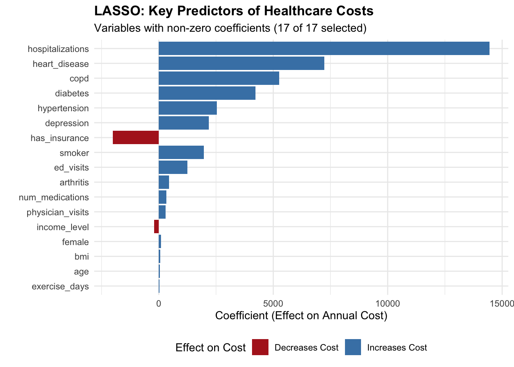
Interpretation:
The LASSO model has identified the most important predictors of healthcare costs. The coefficients tell us the expected change in annual cost associated with each predictor:
- Hospitalizations has the largest coefficient, indicating that each prior hospitalization is associated with substantially higher costs
- Heart disease and COPD are major cost drivers among chronic conditions
- Age contributes incrementally (per year)
- Variables with zero coefficients (not shown) were eliminated as unimportant
3.6.6 LASSO Test Set Performance
Show code
# Make predictions on the test set
lasso_pred <- predict(lasso_cv, s = "lambda.min", newx = x_test)
# Calculate performance metrics
lasso_mse <- mean((y_test - lasso_pred)^2)
lasso_rmse <- sqrt(lasso_mse)
# Display results
cat("LASSO Regression - Test Set Performance\n")LASSO Regression - Test Set PerformanceShow code
cat("======================================\n")======================================Show code
cat("Mean Squared Error (MSE):", format(round(lasso_mse), big.mark = ","), "\n")Mean Squared Error (MSE): 9,246,852 Show code
cat("Root Mean Squared Error (RMSE): $", format(round(lasso_rmse, 2), big.mark = ","), "\n")Root Mean Squared Error (RMSE): $ 3,040.86 Show code
# Compare to OLS
improvement_lasso <- (ols_rmse - lasso_rmse) / ols_rmse * 100
cat("\nImprovement over OLS:", round(improvement_lasso, 1), "%\n")
Improvement over OLS: -0.3 %Show code
cat("Number of predictors used:", n_nonzero_min, "(vs", length(predictor_vars), "in OLS)\n")Number of predictors used: 17 (vs 17 in OLS)3.7 Elastic Net Regression
Finally, let’s fit an Elastic Net model, which combines Ridge and LASSO penalties. This requires tuning both alpha (the mix between L1 and L2) and lambda (the penalty strength).
3.7.1 Tuning Alpha and Lambda
We’ll search over a grid of alpha values and find the optimal lambda for each using cross-validation:
Show code
# Define a grid of alpha values to test
# alpha = 0 is Ridge, alpha = 1 is LASSO
alpha_grid <- seq(0, 1, by = 0.1)
# Create a data frame to store results
elastic_results <- data.frame(
alpha = alpha_grid,
lambda_min = NA,
mse_min = NA,
n_features = NA
)
# Important: Use the same CV folds for all alpha values
# This ensures fair comparison
set.seed(123)
fold_id <- sample(1:10, size = length(y_train), replace = TRUE)
# Test each alpha value
for (i in seq_along(alpha_grid)) {
# Fit cross-validated model
cv_fit <- cv.glmnet(
x = x_train,
y = y_train,
alpha = alpha_grid[i],
foldid = fold_id # Use consistent folds
)
# Store results
elastic_results$lambda_min[i] <- cv_fit$lambda.min
elastic_results$mse_min[i] <- min(cv_fit$cvm)
# Count non-zero coefficients
coef_temp <- coef(cv_fit, s = "lambda.min")
elastic_results$n_features[i] <- sum(coef_temp != 0) - 1 # Exclude intercept
}
# Display results
cat("Elastic Net Tuning Results\n")Elastic Net Tuning ResultsShow code
cat("==========================\n")==========================Show code
print(elastic_results) alpha lambda_min mse_min n_features
1 0.0 499.08934 9966695 17
2 0.1 142.14244 9891446 17
3 0.2 93.95197 9896464 17
4 0.3 68.74145 9900149 17
5 0.4 51.55608 9902714 17
6 0.5 41.24487 9904505 17
7 0.6 34.37072 9905805 17
8 0.7 29.46062 9906785 17
9 0.8 25.77804 9907550 17
10 0.9 22.91382 9908162 17
11 1.0 18.79039 9908629 17Show code
# Find the best alpha
best_alpha <- elastic_results$alpha[which.min(elastic_results$mse_min)]
cat("\nBest alpha:", best_alpha, "\n")
Best alpha: 0.1 Show code
cat("This corresponds to:",
ifelse(best_alpha == 0, "Pure Ridge",
ifelse(best_alpha == 1, "Pure LASSO",
paste0(best_alpha * 100, "% LASSO + ", (1-best_alpha) * 100, "% Ridge"))), "\n")This corresponds to: 10% LASSO + 90% Ridge 3.7.2 Visualizing the Alpha Tuning
Show code
# Plot MSE vs Alpha
ggplot(elastic_results, aes(x = alpha, y = mse_min)) +
geom_line(color = "steelblue", linewidth = 1) +
geom_point(color = "steelblue", size = 3) +
geom_vline(xintercept = best_alpha, linetype = "dashed", color = "firebrick") +
annotate("text", x = best_alpha + 0.08, y = max(elastic_results$mse_min),
label = paste("Best α =", best_alpha), hjust = 0, color = "firebrick") +
labs(
title = "Elastic Net: Cross-Validated MSE vs Alpha",
subtitle = "Alpha = 0 (Pure Ridge) to Alpha = 1 (Pure LASSO)",
x = "Alpha (Mixing Parameter)",
y = "Cross-Validated Mean Squared Error"
) +
theme_minimal() +
theme(plot.title = element_text(face = "bold"))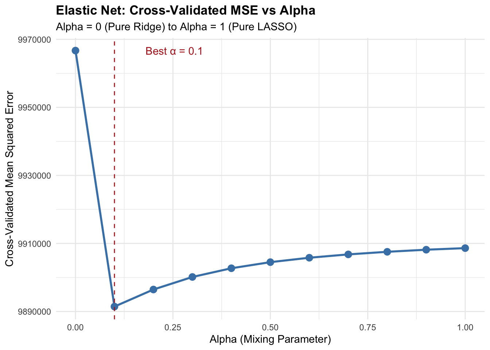
3.7.3 Fit Final Elastic Net Model
Now let’s fit the final Elastic Net model using the optimal alpha:
Show code
# Fit elastic net with the best alpha
elastic_cv <- cv.glmnet(
x = x_train,
y = y_train,
alpha = best_alpha,
nfolds = 10
)
# Extract coefficients
elastic_coef <- coef(elastic_cv, s = "lambda.min")
n_features_elastic <- sum(elastic_coef != 0) - 1
# Make predictions on test set
elastic_pred <- predict(elastic_cv, s = "lambda.min", newx = x_test)
# Calculate performance metrics
elastic_mse <- mean((y_test - elastic_pred)^2)
elastic_rmse <- sqrt(elastic_mse)
# Display results
cat("Elastic Net (alpha =", best_alpha, ") - Test Set Performance\n")Elastic Net (alpha = 0.1 ) - Test Set PerformanceShow code
cat("=================================================\n")=================================================Show code
cat("Mean Squared Error (MSE):", format(round(elastic_mse), big.mark = ","), "\n")Mean Squared Error (MSE): 9,233,806 Show code
cat("Root Mean Squared Error (RMSE): $", format(round(elastic_rmse, 2), big.mark = ","), "\n")Root Mean Squared Error (RMSE): $ 3,038.72 Show code
cat("Number of selected features:", n_features_elastic, "\n")Number of selected features: 17 Show code
# Compare to OLS
improvement_elastic <- (ols_rmse - elastic_rmse) / ols_rmse * 100
cat("\nImprovement over OLS:", round(improvement_elastic, 1), "%\n")
Improvement over OLS: -0.2 %3.8 Comprehensive Model Comparison
Now let’s bring everything together and compare all four models we’ve fit:
3.8.1 Performance Summary Table
Show code
# Create a comparison table
comparison <- data.frame(
Model = c("OLS", "Ridge", "LASSO", "Elastic Net"),
RMSE = round(c(ols_rmse, ridge_rmse, lasso_rmse, elastic_rmse), 2),
MSE = round(c(ols_mse, ridge_mse, lasso_mse, elastic_mse), 0),
Features = c(length(predictor_vars),
length(predictor_vars),
n_nonzero_min,
n_features_elastic)
)
# Calculate improvement over OLS
comparison$Improvement = paste0(
round((1 - comparison$RMSE / ols_rmse) * 100, 1), "%"
)
# Display the comparison
cat("Model Comparison Summary\n")Model Comparison SummaryShow code
cat("========================\n\n")========================Show code
print(comparison) Model RMSE MSE Features Improvement
1 OLS 3031.18 9188074 17 0%
2 Ridge 3102.03 9622606 17 -2.3%
3 LASSO 3040.86 9246852 17 -0.3%
4 Elastic Net 3038.72 9233806 17 -0.2%3.8.2 Visual Comparison
Show code
# Visualize model performance
comparison %>%
ggplot(aes(x = reorder(Model, -RMSE), y = RMSE, fill = Model)) +
geom_col() +
geom_text(aes(label = paste0("$", format(round(RMSE), big.mark = ","))),
vjust = -0.5, fontface = "bold") +
geom_text(aes(label = paste0("(", Features, " vars)")),
vjust = 1.5, color = "white", size = 3.5) +
scale_fill_brewer(palette = "Set2") +
labs(
title = "Model Comparison: Test Set RMSE",
subtitle = "Lower RMSE indicates better prediction accuracy",
x = "",
y = "Root Mean Squared Error ($)"
) +
theme_minimal() +
theme(
legend.position = "none",
plot.title = element_text(face = "bold")
) +
coord_cartesian(ylim = c(0, max(comparison$RMSE) * 1.15))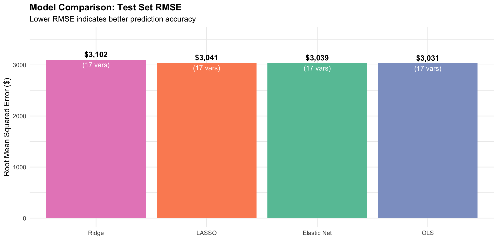
3.8.3 Coefficient Comparison Across Models
Let’s compare how the different methods estimate coefficients:
Show code
# Extract all coefficients
coef_comparison <- data.frame(
variable = rownames(ridge_coef),
OLS = c(coef(ols_model)),
Ridge = as.vector(ridge_coef),
LASSO = as.vector(lasso_coef_min),
ElasticNet = as.vector(elastic_coef)
) %>%
filter(variable != "(Intercept)") %>%
pivot_longer(
cols = -variable,
names_to = "Model",
values_to = "Coefficient"
)
# Create the comparison plot
ggplot(coef_comparison, aes(x = variable, y = Coefficient, fill = Model)) +
geom_col(position = "dodge") +
coord_flip() +
scale_fill_brewer(palette = "Set1") +
labs(
title = "Coefficient Comparison Across Models",
subtitle = "Note how LASSO zeros out less important variables while others keep all",
x = "",
y = "Coefficient Value"
) +
theme_minimal() +
theme(
legend.position = "bottom",
plot.title = element_text(face = "bold")
)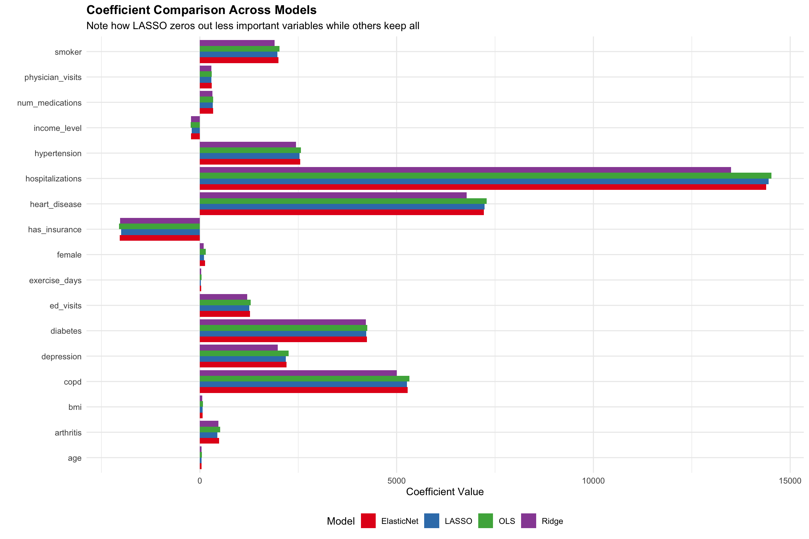
Key observations from the comparison:
- OLS has the largest coefficients (no shrinkage)
- Ridge shrinks all coefficients but keeps them non-zero
- LASSO eliminates several variables entirely (zero coefficients)
- Elastic Net behavior depends on the optimal alpha found
4 PART 3: PRACTICE ACTIVITIES
Now it’s time to test your understanding and build your skills with penalized regression. This section includes conceptual questions, hands-on coding exercises, a comprehensive case study, and interpretation challenges.
4.1 Conceptual Review Questions
These questions test your understanding of the key concepts. Try to answer them before revealing the solutions.
4.1.1 Question 1: Understanding Penalty Types
The L1 (LASSO) and L2 (Ridge) penalties differ fundamentally in how they treat coefficients. Explain the key difference in terms of what happens to coefficients as the penalty strength (lambda) increases.
TipClick for Answer
The key difference lies in whether coefficients can reach exactly zero:
L1 Penalty (LASSO): Uses absolute values \(\sum|\beta_j|\)
- Coefficients can be shrunk exactly to zero
- This performs automatic feature selection
- The penalty for reducing a coefficient is constant regardless of its current size, so it makes sense to push small coefficients all the way to zero
L2 Penalty (Ridge): Uses squared values \(\sum\beta_j^2\)
- Coefficients shrink toward zero but never reach it
- All variables remain in the model
- As coefficients get smaller, the penalty for further reduction decreases (small numbers squared are tiny), so it’s not worth eliminating them entirely
Geometric intuition: The L1 constraint region is a diamond with corners on the axes (where coefficients are zero). The L2 constraint region is a smooth circle with no corners. The optimization solution is more likely to land on a corner for L1.
4.1.2 Question 2: Method Selection
A regional health plan wants to build a model to predict member healthcare costs for budgeting purposes. They have 50 potential predictor variables (demographics, diagnoses, utilization) for 2,000 members. They want to identify the 10-15 most important cost drivers to focus their care management efforts. Which penalized regression method would you recommend and why?
TipClick for Answer
Recommended: LASSO or Elastic Net (with preference for Elastic Net)
Reasoning:
Feature selection is required: They need to identify 10-15 key variables, so Ridge is not appropriate (it keeps all 50)
LASSO would work if:
- Predictors are not highly correlated
- They’re comfortable with arbitrary selection among correlated variables
Elastic Net is preferred because:
- Healthcare predictors are often correlated (comorbidities cluster together)
- Elastic Net groups correlated variables together
- More stable feature selection across different samples
Use lambda.1se instead of lambda.min to get a sparser model closer to their 10-15 variable target
Additional recommendation: After identifying important variables, validate that the selected features make clinical sense and are measurable in practice
4.1.3 Question 3: Interpreting Cross-Validation Plots
When looking at a cross-validation plot for LASSO, you notice that the MSE curve is relatively flat between log(lambda) = -4 and log(lambda) = -2, with MSE values ranging from 9.5 million to 10.0 million. The curve then rises sharply after log(lambda) = -1. What does this tell you about the model, and which lambda would you choose?
TipClick for Answer
What the flat curve tells us:
- Model is robust: Performance is stable across a range of penalty strengths, meaning the key predictive variables are clearly important
- Room for simplification: We can increase lambda (simpler model) without much accuracy loss
- Strong signal: The important variables stand out; we’re not relying on many marginal predictors
Lambda selection:
Given the flat region, choose a lambda toward the right side of the flat region (closer to log(lambda) = -2):
- This gives a simpler model with fewer variables
- Performance loss is minimal (within the flat region)
- The lambda.1se rule is particularly appropriate here
The sharp rise after log(lambda) = -1 indicates we’ve started penalizing truly important variables - don’t go that far.
In practical terms: If lambda.min is at log(lambda) = -4 and lambda.1se is at log(lambda) = -2.5, choose lambda.1se for a more parsimonious model.
4.1.4 Question 4: Multicollinearity Handling
You’re building a readmission risk model using two highly correlated variables: “number of medications” (mean 8, SD 4) and “number of active problems in EHR” (mean 5, SD 3). The correlation is r = 0.75. Compare how Ridge and LASSO would handle these variables differently.
TipClick for Answer
Ridge Regression would:
- Keep both variables with non-zero coefficients
- Shrink both toward each other: If the true combined effect is $5,000, Ridge might assign $2,300 to medications and $2,700 to problems
- Produce stable estimates: The coefficient sum is stable even though individual coefficients might vary between samples
- Result: Both variables contribute to predictions; total effect is properly captured
LASSO Regression would:
- Select one variable arbitrarily: Might keep medications and set problems to zero (or vice versa)
- Assign the entire effect to the selected variable: Medications might get a coefficient of $5,000
- Produce unstable selection: A different training sample might select problems instead
- Result: Misleading interpretation - looks like only one variable matters
Recommendation for this situation:
- Use Elastic Net to get feature selection while handling correlation
- Or create a composite variable (e.g., comorbidity index) before modeling
- Or use domain knowledge to select one variable before modeling
- Be cautious interpreting selected variables as “the only important one”
4.1.5 Question 5: The Effect of Lambda = 0
What happens to both Ridge and LASSO regression models when the tuning parameter lambda is set to exactly 0? Why is this useful to understand?
TipClick for Answer
When λ = 0:
Both Ridge and LASSO reduce to ordinary least squares (OLS) regression.
The objective function becomes: \[\text{Minimize: } SSE + 0 \times \text{Penalty} = SSE\]
This is exactly the OLS objective.
Why this is useful to understand:
- Conceptual continuity: Penalized regression is a generalization of OLS, not a completely different technique
- Method validation: Coefficient paths should converge to OLS estimates as lambda approaches 0 (check this in your plots)
- Baseline comparison: The leftmost point in coefficient path plots represents the OLS solution
- Understanding shrinkage: As lambda increases from 0, we can see how much each coefficient is shrunk from its OLS value
- Edge case awareness: If cross-validation selects a very small lambda, you’re essentially getting OLS - the penalty isn’t helping
4.2 Hands-On Coding Exercises
These exercises give you practice implementing penalized regression. Each includes starter code and a full solution.
4.2.1 Exercise 1: Predicting Hospital Length of Stay
Modify the cost prediction workflow to predict a different outcome: hospital length of stay. This is important for bed management and discharge planning.
Your task: 1. Create a length of stay variable based on patient characteristics 2. Fit a LASSO model to predict length of stay 3. Identify the most important predictors
Show code
# Create a length of stay variable
# Hint: LOS should increase with severity indicators like heart disease, COPD,
# prior hospitalizations, and advanced age
healthcare_data <- healthcare_data %>%
mutate(
length_of_stay =
# YOUR CODE HERE
# Start with a base stay of 1-2 days
# Add days for various conditions and characteristics
)
# Prepare data for glmnet
x_los <- as.matrix(healthcare_data[, predictor_vars])
y_los <- healthcare_data$length_of_stay
# Fit LASSO with cross-validation
los_lasso <- cv.glmnet(
# YOUR CODE HERE
)
# Extract and display important predictors
# YOUR CODE HERE
TipClick for Solution
Show code
# Create length of stay variable
# LOS is driven by severity, with some random variation
healthcare_data <- healthcare_data %>%
mutate(
length_of_stay =
# Base stay
1 +
# Serious conditions add days
heart_disease * rpois(n(), 3) +
copd * rpois(n(), 2) +
# Prior utilization suggests sicker patients
hospitalizations * 2 +
# Elderly patients stay longer
ifelse(age > 70, rpois(n(), 1), 0) +
# Diabetes complicates recovery
diabetes * rpois(n(), 1) +
# Random variation
abs(rnorm(n(), 0, 0.5))
) %>%
# Ensure non-negative LOS
mutate(length_of_stay = pmax(length_of_stay, 0))
# Prepare data for glmnet
x_los <- as.matrix(healthcare_data[, predictor_vars])
y_los <- healthcare_data$length_of_stay
# Fit LASSO with cross-validation
los_lasso <- cv.glmnet(
x = x_los,
y = y_los,
alpha = 1, # LASSO
nfolds = 10
)
# Plot cross-validation results
plot(los_lasso)
title("Length of Stay LASSO: Cross-Validation", line = 3)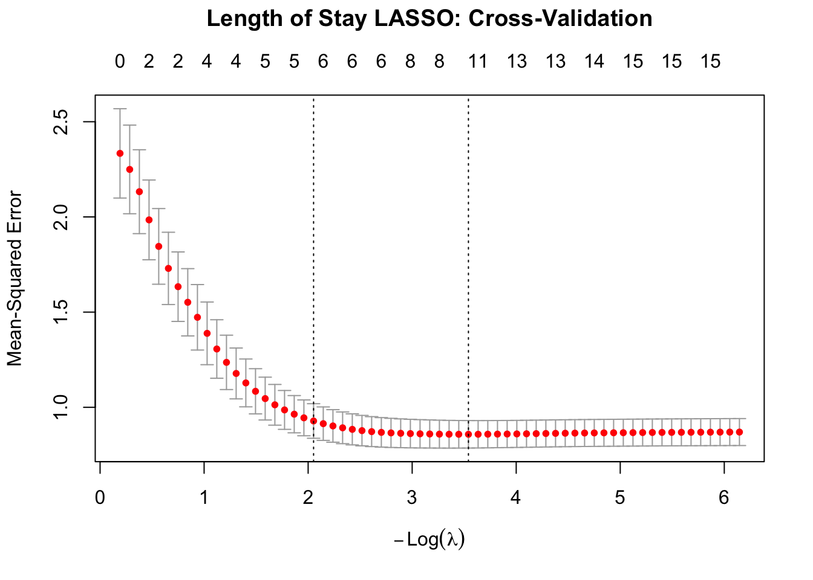
Show code
# Extract important predictors
los_coef <- coef(los_lasso, s = "lambda.min")
los_important <- data.frame(
variable = rownames(los_coef),
coefficient = as.vector(los_coef)
) %>%
filter(variable != "(Intercept)", coefficient != 0) %>%
arrange(desc(abs(coefficient)))
cat("Important Predictors for Length of Stay:\n")Important Predictors for Length of Stay:Show code
cat("========================================\n")========================================Show code
print(los_important) variable coefficient
1 heart_disease 2.6599742901
2 hospitalizations 1.9875175200
3 copd 1.6972986462
4 diabetes 0.8459287790
5 hypertension 0.1848280793
6 ed_visits 0.0381309333
7 has_insurance -0.0156353523
8 num_medications 0.0154738760
9 age 0.0128736219
10 exercise_days -0.0009759092Show code
# Visualize
ggplot(los_important, aes(x = reorder(variable, abs(coefficient)), y = coefficient)) +
geom_col(fill = "steelblue") +
coord_flip() +
labs(title = "LASSO: Key Predictors of Length of Stay",
x = "", y = "Coefficient (Days)") +
theme_minimal()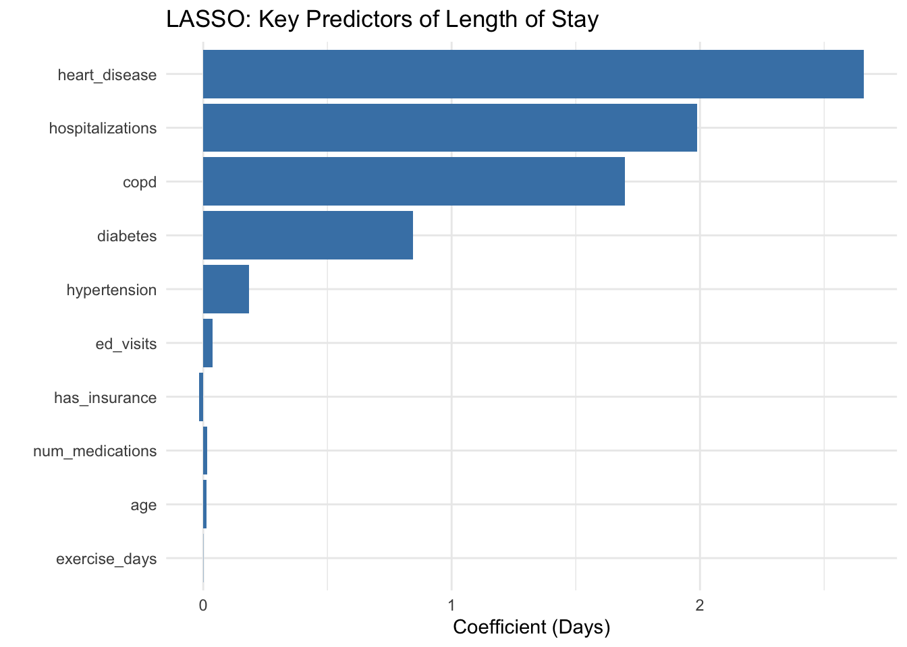
4.2.2 Exercise 2: Comparing Lambda.min vs Lambda.1se
An important decision in penalized regression is whether to use lambda.min or lambda.1se. Let’s compare them directly for the cost prediction model.
Your task: 1. Generate predictions using both lambda values 2. Calculate and compare RMSE 3. Compare the number of features selected 4. Make a recommendation
Show code
# Get predictions at both lambda values
pred_min <- predict(lasso_cv, s = "lambda.min", newx = x_test)
pred_1se <- predict(lasso_cv, s = "lambda.1se", newx = x_test)
# Calculate RMSE for each
rmse_min <- # YOUR CODE HERE
rmse_1se <- # YOUR CODE HERE
# Count features selected at each lambda
coef_min <- coef(lasso_cv, s = "lambda.min")
coef_1se <- coef(lasso_cv, s = "lambda.1se")
n_features_min <- # YOUR CODE HERE
n_features_1se <- # YOUR CODE HERE
# Display comparison
cat("Lambda.min: RMSE = $", rmse_min, ", Features =", n_features_min, "\n")
cat("Lambda.1se: RMSE = $", rmse_1se, ", Features =", n_features_1se, "\n")
# Calculate accuracy-complexity tradeoff
cat("\nTradeoff: ", n_features_min - n_features_1se, "fewer features for $",
round(rmse_1se - rmse_min, 2), "higher RMSE\n")
# Your recommendation:
# Which would you choose for a hospital cost prediction system? Why?
TipClick for Solution
Show code
# Get predictions at both lambda values
pred_min <- predict(lasso_cv, s = "lambda.min", newx = x_test)
pred_1se <- predict(lasso_cv, s = "lambda.1se", newx = x_test)
# Calculate RMSE
rmse_min <- sqrt(mean((y_test - pred_min)^2))
rmse_1se <- sqrt(mean((y_test - pred_1se)^2))
# Count features
coef_min <- coef(lasso_cv, s = "lambda.min")
coef_1se <- coef(lasso_cv, s = "lambda.1se")
n_features_min <- sum(coef_min[-1] != 0) # Exclude intercept
n_features_1se <- sum(coef_1se[-1] != 0)
# Display comparison
cat("Comparison of Lambda Choices\n")Comparison of Lambda ChoicesShow code
cat("============================\n\n")============================Show code
cat("Lambda.min:\n")Lambda.min:Show code
cat(" - Lambda value:", round(lasso_cv$lambda.min, 4), "\n") - Lambda value: 20.6224 Show code
cat(" - Test RMSE: $", format(round(rmse_min, 2), big.mark = ","), "\n") - Test RMSE: $ 3,040.86 Show code
cat(" - Features selected:", n_features_min, "\n\n") - Features selected: 17 Show code
cat("Lambda.1se:\n")Lambda.1se:Show code
cat(" - Lambda value:", round(lasso_cv$lambda.1se, 4), "\n") - Lambda value: 175.2398 Show code
cat(" - Test RMSE: $", format(round(rmse_1se, 2), big.mark = ","), "\n") - Test RMSE: $ 3,173.8 Show code
cat(" - Features selected:", n_features_1se, "\n\n") - Features selected: 14 Show code
# Tradeoff analysis
cat("Tradeoff Analysis:\n")Tradeoff Analysis:Show code
cat(" - Reduction in features:", n_features_min - n_features_1se, "\n") - Reduction in features: 3 Show code
cat(" - Increase in RMSE: $", round(rmse_1se - rmse_min, 2), "\n") - Increase in RMSE: $ 132.94 Show code
cat(" - Percentage increase:", round((rmse_1se - rmse_min) / rmse_min * 100, 1), "%\n") - Percentage increase: 4.4 %Show code
# Recommendation
cat("\nRecommendation:\n")
Recommendation:Show code
if ((rmse_1se - rmse_min) / rmse_min < 0.05) {
cat("Choose lambda.1se - the accuracy sacrifice is minimal (<5%)\n")
cat("while gaining a substantially simpler model.\n")
} else {
cat("Consider lambda.min - the accuracy gain justifies the additional complexity.\n")
}Choose lambda.1se - the accuracy sacrifice is minimal (<5%)
while gaining a substantially simpler model.4.2.3 Exercise 3: Custom Alpha for Elastic Net
Instead of testing a grid of alphas, fit an Elastic Net with a specific alpha that balances between Ridge and LASSO.
Your task: 1. Fit Elastic Net with alpha = 0.5 (equal mix) 2. Compare with pure Ridge (alpha = 0) and pure LASSO (alpha = 1) 3. Create a visualization comparing the three
Show code
# Fit three models
set.seed(456)
ridge_cv <- cv.glmnet(x_train, y_train, alpha = 0, nfolds = 10)
elastic_cv <- cv.glmnet(x_train, y_train, alpha = 0.5, nfolds = 10)
lasso_cv <- cv.glmnet(x_train, y_train, alpha = 1, nfolds = 10)
# Get test predictions
# YOUR CODE HERE
# Calculate RMSE and feature counts
# YOUR CODE HERE
# Create comparison visualization
# YOUR CODE HERE
TipClick for Solution
Show code
# Fit three models with different alpha values
set.seed(456)
ridge_ex <- cv.glmnet(x_train, y_train, alpha = 0, nfolds = 10)
elastic_ex <- cv.glmnet(x_train, y_train, alpha = 0.5, nfolds = 10)
lasso_ex <- cv.glmnet(x_train, y_train, alpha = 1, nfolds = 10)
# Get predictions
pred_ridge <- predict(ridge_ex, s = "lambda.min", newx = x_test)
pred_elastic <- predict(elastic_ex, s = "lambda.min", newx = x_test)
pred_lasso <- predict(lasso_ex, s = "lambda.min", newx = x_test)
# Calculate metrics
results_ex3 <- data.frame(
Model = c("Ridge (α=0)", "Elastic Net (α=0.5)", "LASSO (α=1)"),
Alpha = c(0, 0.5, 1),
RMSE = c(
sqrt(mean((y_test - pred_ridge)^2)),
sqrt(mean((y_test - pred_elastic)^2)),
sqrt(mean((y_test - pred_lasso)^2))
),
Features = c(
sum(coef(ridge_ex, s = "lambda.min") != 0) - 1,
sum(coef(elastic_ex, s = "lambda.min") != 0) - 1,
sum(coef(lasso_ex, s = "lambda.min") != 0) - 1
)
)
print(results_ex3) Model Alpha RMSE Features
1 Ridge (α=0) 0.0 3102.033 17
2 Elastic Net (α=0.5) 0.5 3057.531 17
3 LASSO (α=1) 1.0 3040.864 17Show code
# Visualization
p1 <- ggplot(results_ex3, aes(x = Model, y = RMSE, fill = Model)) +
geom_col() +
geom_text(aes(label = paste0("$", round(RMSE))), vjust = -0.5) +
scale_fill_brewer(palette = "Set2") +
labs(title = "Test RMSE by Model", y = "RMSE ($)") +
theme_minimal() +
theme(legend.position = "none", axis.title.x = element_blank())
p2 <- ggplot(results_ex3, aes(x = Model, y = Features, fill = Model)) +
geom_col() +
geom_text(aes(label = Features), vjust = -0.5) +
scale_fill_brewer(palette = "Set2") +
labs(title = "Number of Features", y = "Features Selected") +
theme_minimal() +
theme(legend.position = "none", axis.title.x = element_blank())
gridExtra::grid.arrange(p1, p2, ncol = 2)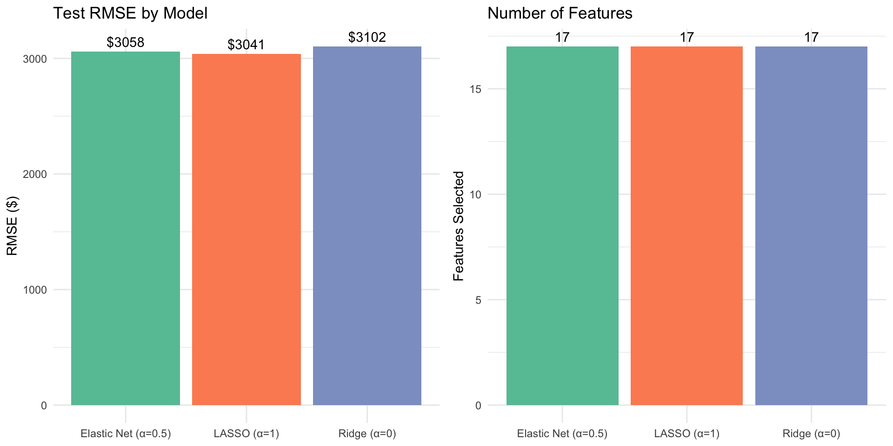
4.3 Case Study: Hospital Readmission Risk Model
This comprehensive case study walks you through building a readmission risk model, which is one of the most important applications of predictive analytics in healthcare management.
4.3.1 Background and Business Context
The Problem: Community General Hospital has a 30-day all-cause readmission rate of 15%, above the national average. Under the Hospital Readmissions Reduction Program (HRRP), they face financial penalties for excess readmissions.
The Goal: Develop a predictive model to identify patients at high risk for readmission before discharge. These patients can then receive:
- Enhanced discharge planning
- Transitional care management
- Follow-up phone calls
- Home health referrals
- Medication reconciliation
Requirements:
- Model must be interpretable so clinicians understand why a patient is flagged
- Must identify high-risk patients reliably (not just predict the average)
- Should use data available at the time of discharge
- Simple enough to implement in the EHR
4.3.2 Dataset
Let’s create a realistic readmission dataset:
Show code
# Create readmission dataset
set.seed(789)
n_patients <- 1000
readmission_data <- data.frame(
# Demographics
age = round(rnorm(n_patients, 68, 14)),
male = rbinom(n_patients, 1, 0.48),
lives_alone = rbinom(n_patients, 1, 0.25),
# Clinical factors (from current hospitalization)
num_comorbidities = rpois(n_patients, 3),
admission_source_ed = rbinom(n_patients, 1, 0.35),
length_of_stay = rpois(n_patients, 4) + 1,
icu_stay = rbinom(n_patients, 1, 0.18),
# Prior utilization (strong predictors)
prior_admissions_12mo = rpois(n_patients, 0.6),
prior_ed_visits_12mo = rpois(n_patients, 1.2),
# Discharge factors
discharge_to_snf = rbinom(n_patients, 1, 0.12),
num_discharge_meds = rpois(n_patients, 8),
high_risk_meds = rbinom(n_patients, 1, 0.30),
# Social/access factors
medicaid = rbinom(n_patients, 1, 0.22),
no_pcp = rbinom(n_patients, 1, 0.15),
health_literacy_low = rbinom(n_patients, 1, 0.25),
# Lab/clinical indicators
abnormal_sodium = rbinom(n_patients, 1, 0.10),
low_hemoglobin = rbinom(n_patients, 1, 0.22),
elevated_creatinine = rbinom(n_patients, 1, 0.18),
elevated_bnp = rbinom(n_patients, 1, 0.15)
)
# Generate readmission outcome
# Based on clinical literature on readmission risk factors
readmission_data <- readmission_data %>%
mutate(
# Create linear predictor based on known risk factors
log_odds = -2.5 +
0.015 * age +
0.4 * lives_alone +
0.2 * num_comorbidities +
0.8 * prior_admissions_12mo + # Strong predictor
0.3 * prior_ed_visits_12mo +
0.1 * length_of_stay +
0.5 * icu_stay +
0.4 * no_pcp + # Access barrier
0.3 * health_literacy_low +
0.5 * high_risk_meds +
0.3 * low_hemoglobin +
0.4 * elevated_bnp,
# Convert to probability via logistic function
prob_readmit = 1 / (1 + exp(-log_odds)),
# Generate binary outcome
readmitted = rbinom(n_patients, 1, prob_readmit)
) %>%
select(-log_odds, -prob_readmit)
# Examine the dataset
cat("Readmission Dataset Summary\n")Readmission Dataset SummaryShow code
cat("===========================\n")===========================Show code
cat("Total patients:", nrow(readmission_data), "\n")Total patients: 1000 Show code
cat("30-day readmission rate:", round(mean(readmission_data$readmitted) * 100, 1), "%\n")30-day readmission rate: 69.3 %Show code
cat("Number of predictors:", ncol(readmission_data) - 1, "\n")Number of predictors: 19 4.3.3 Your Tasks
Complete the following analyses. Solutions are provided, but try each task yourself first.
4.3.3.1 Task 1: Data Preparation
Prepare the data for penalized logistic regression.
Show code
# Split into training (70%) and test (30%) sets
set.seed(123)
train_idx <- sample(1:nrow(readmission_data), 0.7 * nrow(readmission_data))
train_readmit <- readmission_data[train_idx, ]
test_readmit <- readmission_data[-train_idx, ]
# Prepare predictor matrix and outcome vector
# YOUR CODE HERE
# Check class balance in training set
# YOUR CODE HERE4.3.3.2 Task 2: Fit LASSO Logistic Regression
For binary outcomes, we use family = "binomial" in glmnet.
Show code
# Fit LASSO logistic regression with cross-validation
readmit_lasso <- cv.glmnet(
# YOUR CODE HERE
family = "binomial", # For binary outcome
alpha = 1, # LASSO
nfolds = 10,
type.measure = "auc" # Use AUC for classification
)
# Plot results and identify optimal lambda
# YOUR CODE HERE4.3.3.3 Task 3: Identify Risk Factors
Extract and interpret the selected predictors.
Show code
# Extract coefficients at lambda.1se (prefer simpler model for clinical use)
# YOUR CODE HERE
# Convert to odds ratios for interpretation
# YOUR CODE HERE
# Create visualization of risk factors
# YOUR CODE HERE4.3.3.4 Task 4: Evaluate Model Performance
Assess how well the model discriminates between patients who will and won’t be readmitted.
Show code
# Get predicted probabilities on test set
# YOUR CODE HERE
# Calculate AUC
# YOUR CODE HERE
# Create risk stratification (e.g., low/medium/high risk)
# YOUR CODE HERE
TipClick for Complete Solution
Show code
# Task 1: Data Preparation
set.seed(123)
train_idx <- sample(1:nrow(readmission_data), 0.7 * nrow(readmission_data))
train_readmit <- readmission_data[train_idx, ]
test_readmit <- readmission_data[-train_idx, ]
predictors_readmit <- setdiff(names(readmission_data), "readmitted")
x_train_r <- as.matrix(train_readmit[, predictors_readmit])
y_train_r <- train_readmit$readmitted
x_test_r <- as.matrix(test_readmit[, predictors_readmit])
y_test_r <- test_readmit$readmitted
cat("Class Balance in Training Set:\n")Class Balance in Training Set:Show code
cat(" - Not readmitted:", sum(y_train_r == 0),
"(", round(mean(y_train_r == 0) * 100, 1), "%)\n") - Not readmitted: 219 ( 31.3 %)Show code
cat(" - Readmitted:", sum(y_train_r == 1),
"(", round(mean(y_train_r == 1) * 100, 1), "%)\n\n") - Readmitted: 481 ( 68.7 %)Show code
# Task 2: Fit LASSO Logistic Regression
readmit_lasso <- cv.glmnet(
x = x_train_r,
y = y_train_r,
family = "binomial",
alpha = 1,
nfolds = 10,
type.measure = "auc" # Optimize for AUC
)
plot(readmit_lasso)
title("Readmission LASSO: Cross-Validated AUC", line = 3)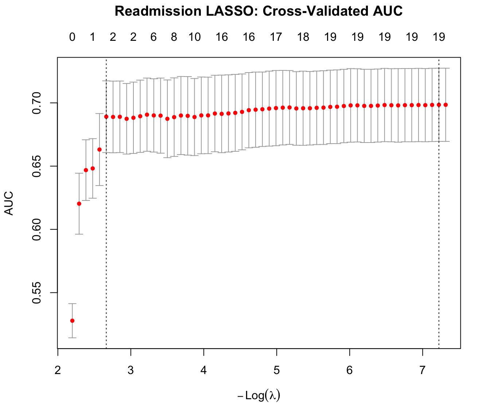
Show code
cat("Cross-Validation Results:\n")Cross-Validation Results:Show code
cat(" - Lambda.min:", round(readmit_lasso$lambda.min, 4), "\n") - Lambda.min: 7e-04 Show code
cat(" - Lambda.1se:", round(readmit_lasso$lambda.1se, 4), "\n") - Lambda.1se: 0.0697 Show code
cat(" - Max CV AUC:", round(max(readmit_lasso$cvm), 3), "\n\n") - Max CV AUC: 0.698 Show code
# Task 3: Identify Risk Factors
coef_readmit <- coef(readmit_lasso, s = "lambda.1se")
risk_factors <- data.frame(
variable = rownames(coef_readmit),
coefficient = as.vector(coef_readmit)
) %>%
filter(variable != "(Intercept)", coefficient != 0) %>%
mutate(
odds_ratio = round(exp(coefficient), 2),
effect = ifelse(coefficient > 0, "Increases Risk", "Decreases Risk")
) %>%
arrange(desc(abs(coefficient)))
cat("Selected Risk Factors (", nrow(risk_factors), " of ",
length(predictors_readmit), "):\n")Selected Risk Factors ( 2 of 19 ):Show code
cat(paste(rep("=", 50), collapse = ""), "\n")================================================== Show code
print(risk_factors) variable coefficient odds_ratio effect
1 prior_admissions_12mo 0.26077925 1.30 Increases Risk
2 num_comorbidities 0.01671262 1.02 Increases RiskShow code
# Visualization
ggplot(risk_factors, aes(x = reorder(variable, coefficient),
y = coefficient,
fill = effect)) +
geom_col() +
coord_flip() +
scale_fill_manual(values = c("steelblue", "firebrick")) +
geom_hline(yintercept = 0, linetype = "dashed") +
labs(
title = "LASSO Logistic Regression: Readmission Risk Factors",
subtitle = "Positive coefficients increase readmission risk",
x = "",
y = "Log Odds Coefficient",
fill = ""
) +
theme_minimal() +
theme(legend.position = "bottom")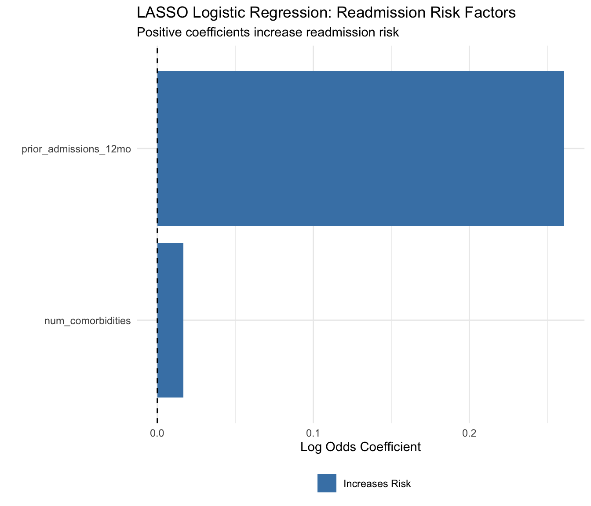
Show code
# Task 4: Model Performance
pred_prob <- predict(readmit_lasso, s = "lambda.1se",
newx = x_test_r, type = "response")
# Calculate AUC
roc_obj <- roc(y_test_r, as.vector(pred_prob))
auc_value <- auc(roc_obj)
cat("\n\nModel Performance on Test Set:\n")
Model Performance on Test Set:Show code
cat("==============================\n")==============================Show code
cat("AUC:", round(auc_value, 3), "\n")AUC: 0.669 Show code
# Risk stratification
risk_strat <- data.frame(
actual = y_test_r,
predicted_prob = as.vector(pred_prob)
) %>%
mutate(
risk_group = case_when(
predicted_prob < 0.10 ~ "Low Risk",
predicted_prob < 0.25 ~ "Medium Risk",
TRUE ~ "High Risk"
)
)
# Summary by risk group
risk_summary <- risk_strat %>%
group_by(risk_group) %>%
summarise(
n_patients = n(),
n_readmitted = sum(actual),
readmit_rate = round(mean(actual) * 100, 1)
) %>%
arrange(desc(readmit_rate))
cat("\nRisk Stratification:\n")
Risk Stratification:Show code
print(as.data.frame(risk_summary)) risk_group n_patients n_readmitted readmit_rate
1 High Risk 300 212 70.7Show code
cat("\n=== Clinical Interpretation for Hospital Administrators ===\n\n")
=== Clinical Interpretation for Hospital Administrators ===Show code
cat("The model identifies", nrow(risk_factors), "key risk factors for 30-day readmission.\n\n")The model identifies 2 key risk factors for 30-day readmission.Show code
cat("Top Modifiable Risk Factors:\n")Top Modifiable Risk Factors:Show code
modifiable <- risk_factors %>%
filter(variable %in% c("no_pcp", "health_literacy_low", "high_risk_meds"))
if(nrow(modifiable) > 0) {
for(i in 1:nrow(modifiable)) {
cat(" -", modifiable$variable[i], "(OR =", modifiable$odds_ratio[i], ")\n")
}
}
cat("\nRecommended Interventions for High-Risk Patients:\n")
Recommended Interventions for High-Risk Patients:Show code
cat(" 1. Ensure PCP follow-up scheduled within 7 days\n") 1. Ensure PCP follow-up scheduled within 7 daysShow code
cat(" 2. Medication reconciliation by pharmacist\n") 2. Medication reconciliation by pharmacistShow code
cat(" 3. Teach-back to assess health literacy\n") 3. Teach-back to assess health literacyShow code
cat(" 4. Transitional care management enrollment\n") 4. Transitional care management enrollment4.4 Interpretation Challenges
These challenges test your ability to correctly interpret penalized regression results and avoid common pitfalls.
4.4.1 Challenge 1: Interpreting Coefficient Magnitudes
You’ve built a LASSO model to predict annual healthcare costs. Here are the non-zero coefficients:
| Variable | Coefficient | Unit |
|---|---|---|
| heart_disease | 7,856 | Binary (0/1) |
| hospitalizations | 14,234 | Count |
| diabetes | 4,567 | Binary (0/1) |
| smoker | 1,890 | Binary (0/1) |
| age | 48 | Years |
| bmi | 0 | kg/m² |
Questions:
A colleague says “Heart disease is more important than age because its coefficient is larger.” Is this correct? Explain.
BMI has a coefficient of zero. Does this mean BMI is unrelated to healthcare costs?
The CEO asks: “So heart disease causes $7,856 in additional costs?” How do you respond?
TipClick for Answers
Question 1: Comparing coefficient magnitudes
This comparison is incorrect. Coefficient magnitudes depend on the scale of measurement:
- Heart disease coefficient: $7,856 per occurrence (binary 0/1)
- Age coefficient: $48 per year
For a meaningful comparison, consider realistic ranges:
- Heart disease: 0 vs 1 → difference of $7,856
- Age: 40 vs 70 (30-year difference) → difference of 30 × $48 = $1,440
So yes, heart disease has a larger effect for this comparison. But comparing 20 vs 80 (60-year difference) gives 60 × $48 = $2,880.
The correct approach: Either standardize coefficients or compare effects across realistic ranges of each variable.
Question 2: BMI coefficient of zero
A zero coefficient does NOT mean BMI is unrelated to costs. It means:
- After controlling for other variables, BMI doesn’t add predictive value
- BMI’s effect may be captured by correlated variables (diabetes, heart disease)
- In this particular sample, other variables were more predictive
If you ran a simple regression with only BMI, you’d likely find a significant positive relationship. LASSO eliminated it because it’s redundant given other predictors.
Clinical interpretation: Don’t conclude BMI doesn’t matter for health costs. It does - but its effect operates through conditions like diabetes that are in the model.
Question 3: Causal interpretation
Correct response: “We need to be careful with that interpretation. This is a predictive model, not a causal model. The coefficient tells us:”
- Patients with heart disease cost about $7,856 more than similar patients without
- But this doesn’t mean heart disease causes this cost difference
- Other factors correlated with heart disease (severity, behaviors, access) may explain part of this
- To establish causation, we’d need experimental or quasi-experimental designs
Better phrasing: “Heart disease is associated with $7,856 higher costs” or “Patients with heart disease are predicted to have $7,856 higher costs.”
4.4.2 Challenge 2: Choosing the Right Model
You’re building models to predict emergency department utilization for a health plan’s care management program. You’ve tested three models:
| Model | Test AUC | Features | Description |
|---|---|---|---|
| Ridge | 0.742 | 45 | All variables |
| LASSO (λ.min) | 0.738 | 18 | Selected variables |
| LASSO (λ.1se) | 0.721 | 8 | Fewer variables |
Scenarios - which model would you choose and why?
- The model will be embedded in the EHR to flag patients for outreach
- You’re writing a journal article to identify risk factors for ED utilization
- You want to create patient-facing educational materials about ED risk factors
- The health plan wants maximum accuracy for financial projections
TipClick for Answers
Scenario 1: EHR-embedded alert system
Choose: LASSO (λ.1se) with 8 features
- Simpler models are easier to implement and maintain in EHRs
- Faster computation for real-time scoring
- Clinicians can understand why a patient is flagged
- AUC of 0.721 is still clinically useful
- Fewer data dependencies = fewer points of failure
Scenario 2: Journal article on risk factors
Choose: LASSO (λ.min) with 18 features
- Feature selection identifies important predictors (Ridge doesn’t)
- λ.min provides best balance of selection and accuracy
- Can discuss which factors were selected vs. eliminated
- Reviewers will want to see reasonable discrimination (0.738 > 0.721)
- 18 features is interpretable but comprehensive
Caution: Don’t over-interpret causally; note that selection among correlated variables is somewhat arbitrary
Scenario 3: Patient-facing educational materials
Choose: LASSO (λ.1se) with 8 features
- Patients can’t process 18 or 45 risk factors
- Simple messages: “These 8 factors increase your ED risk”
- Focus on modifiable factors among the 8
- Accuracy is less important than clarity for behavior change
Scenario 4: Financial projections
Choose: Ridge with 45 features
- Maximum AUC (0.742) for best accuracy
- For aggregate financial projections, you need precision
- Interpretability doesn’t matter - you just need accurate totals
- The 0.004 AUC improvement over LASSO λ.min might matter at scale
General principle: Match the model to the use case. There’s no single “best” model - it depends on your goals.
5 Summary and Key Takeaways
5.1 When to Use Penalized Regression
Penalized regression should be your default approach when:
- Many potential predictors (more than 10-15 variables)
- Correlated predictors (common in healthcare - comorbidities cluster together)
- Concern about overfitting (especially with limited sample size)
- Need for feature selection (identifying key drivers)
- Prediction is the primary goal (not causal inference)
Even when these conditions aren’t extreme, penalized regression rarely hurts and often helps.
5.2 Method Selection Guide
Use Ridge when:
- All predictors are likely relevant
- Correlated predictors should be kept together
- Interpretability of individual coefficients isn’t critical
Use LASSO when:
- Feature selection is important
- You need an interpretable, sparse model
- Predictors are not highly correlated
Use Elastic Net when:
- You need feature selection with correlated predictors
- You’re unsure which method to use (good default)
- You want stable variable selection
5.3 Key Implementation Steps
- Prepare data: Convert to matrix format for glmnet
- Fit with cross-validation: Use cv.glmnet() to find optimal lambda
- Choose lambda: Usually lambda.1se for simplicity, lambda.min for accuracy
- Extract and interpret: Look at selected variables and coefficient signs
- Evaluate on test set: Calculate RMSE (regression) or AUC (classification)
- Validate clinically: Ensure selected variables make sense
5.4 Common Pitfalls to Avoid
- Don’t interpret selected variables causally - these are predictive associations
- Don’t compare coefficient magnitudes across different scales - standardize first
- Don’t assume excluded variables are unimportant - they may be redundant
- Don’t use training set performance - always evaluate on held-out test set
- Don’t ignore clinical plausibility - if results don’t make sense, investigate
5.5 Healthcare Applications
Penalized regression is used throughout healthcare:
- Risk stratification: Identifying high-risk patients for care management
- Cost prediction: Budgeting, pricing, risk adjustment
- Quality improvement: Understanding drivers of readmissions, complications
- Clinical decision support: Building alert systems and risk scores
- Population health: Targeting interventions to those most likely to benefit
6 Assignment: MEPS Data Analysis
For additional practice with real-world data, complete this assignment using the Medical Expenditure Panel Survey (MEPS).
6.1 Data Access
MEPS data is publicly available from AHRQ: https://meps.ahrq.gov/
You can: 1. Download actual MEPS data files 2. Use the MEPS R package 3. Use AHRQ’s online data tools
6.2 Assignment Tasks
6.2.1 Task 1: Predict Total Healthcare Expenditures (50 points)
Using MEPS data, build models to predict total annual healthcare expenditures.
Requirements: - Include demographics, insurance, chronic conditions, health status, prior utilization - Fit OLS, Ridge, LASSO, and Elastic Net models - Use 70/30 train/test split - Report test RMSE for each model - Identify top 10 predictors from LASSO - Recommend which model to use for a health plan’s risk adjustment and explain why
6.2.2 Task 2: Predict Any Hospitalization (30 points)
Create a binary outcome for any inpatient stay and fit penalized logistic regression.
Requirements: - Report cross-validated AUC - Identify key risk factors with odds ratios - Calculate predicted probabilities for example patients - Discuss how this model could be used for care management
6.2.3 Task 3: Written Analysis (20 points)
Write a brief report (500-750 words) addressing: - Key findings from your models - Comparison of methods and their tradeoffs - Limitations of the predictive approach - Recommendations for implementation
6.3 Grading Rubric
| Component | Points |
|---|---|
| Data preparation and cleaning | 15 |
| Model implementation (all methods) | 25 |
| Cross-validation and tuning | 10 |
| Test set evaluation and comparison | 15 |
| Feature selection interpretation | 15 |
| Written analysis and recommendations | 20 |
| Total | 100 |
7 References and Additional Resources
7.1 Primary Sources for This Document
This tutorial was developed using the following primary sources:
UC Business Analytics R Programming Guide: Regularized Regression - Comprehensive tutorial on Ridge, LASSO, and Elastic Net with R implementation
Etzioni, R., Mandrekar, J., & Engeland, A. (2020). Statistics for Health Data Science. Springer. Chapter 10: Prediction - Healthcare-specific examples and MEPS data applications
7.2 Recommended Textbooks
James, G., Witten, D., Hastie, T., & Tibshirani, R. (2021). An Introduction to Statistical Learning with Applications in R (2nd ed.). Springer. [Free online at www.statlearning.com] - Excellent, accessible introduction with R code
Hastie, T., Tibshirani, R., & Friedman, J. (2009). The Elements of Statistical Learning (2nd ed.). Springer. [Free online] - More technical reference
Etzioni, R., et al. (2020). Statistics for Health Data Science. Springer. - Healthcare-specific applications
7.3 R Package Documentation
glmnet package: https://glmnet.stanford.edu/articles/glmnet.html - Comprehensive vignette with examples
caret package: For unified modeling interface
tidymodels: Modern tidy approach to machine learning in R
7.4 Online Tutorials
DataCamp and Coursera courses on machine learning
R-bloggers and Towards Data Science for practical examples
7.5 Healthcare-Specific Resources
MEPS data: https://meps.ahrq.gov/ - Rich public dataset for practice
CMS risk adjustment: Information on how penalized regression is used in practice
HRRP (Hospital Readmissions Reduction Program): Context for readmission prediction
7.6 Key Academic Papers
Tibshirani, R. (1996). Regression shrinkage and selection via the lasso. Journal of the Royal Statistical Society Series B, 58(1), 267-288.
Zou, H., & Hastie, T. (2005). Regularization and variable selection via the elastic net. Journal of the Royal Statistical Society Series B, 67(2), 301-320.